专题01 期末复习易错题67个考点
【北师大版2024】

【考点1 认识立体图形与平面图形】 2
【考点2 几何体的展开图】 3
【考点3 从不同方向看几何体】 5
【考点4 点、线、面、体】 7
【考点5 截一个几何体】 8
【考点6 正方体的展开图】 10
【考点7 正数和负数】 11
【考点8 有理数的概念】 13
【考点9 数轴】 15
【考点10 相反数】 17
【考点11 绝对值】 18
【考点12 绝对值的非负性】 19
【考点13 有理数的大小比较】 21
【考点14 有理数的加法】 23
【考点15 有理数的减法】 25
【考点16 有理数的加减混合运算】 26
【考点17 有理数的乘法】 28
【考点18 倒数】 29
【考点19 有理数的除法】 31
【考点20 有理数的乘方】 32
【考点21 偶次方的非负性】 34
【考点22 有理数的混合运算】 36
【考点23 科学记数法—表示较大点的数】 40
【考点24 近似数】 41
【考点25 代数式的相关概念】 42
【考点26 列代数式】 43
【考点27 代数式的值】 46
【考点28 单项式】 48
【考点29 多项式】 49
【考点30 整式】 50
【考点31 同类项】 53
【考点32 合并同类项】 54
【考点33 去括号与添括号】 55
【考点34 整式的加减】 57
【考点35 整式的加减—化简求值】 59
【考点36 整式加减的应用】 61
【考点37 直线、射线、线段】 63
【考点38 两点确定一条直线】 65
【考点39 尺规作线段】 66
【考点40 两点之间线段最短】 68
【考点41 两点间的距离】 69
【考点42 线段的和差】 72
【考点43 比较线段的长短】 75
【考点44 角的概念】 78
【考点45 钟面角】 80
【考点46 方向角】 82
【考点47 度分秒的换算】 84
【考点48 角平分线的定义】 85
【考点49 角的大小比较】 90
【考点50 角的计算】 92
【考点51 多边形和圆的初步认识】 95
【考点52 方程的定义】 96
【考点53 方程的解】 97
【考点54 一元一次方程的定义】 98
【考点55 等式的性质】 100
【考点56 解一元一次方程】 101
【考点57 一元一次方程的解】 103
【考点58 由实际问题抽象出一元一次方程】 106
【考点59 一元一次方程的应用】 107
【考点60 定量数据与定性数据】 110
【考点61 普查与抽样调查】 112
【考点62 总体、个体、样本、样本容量】 114
【考点63 统计表】 116
【考点64 条形统计图】 118
【考点65 扇形统计图】 120
【考点66 折线统计图】 122
【考点67 频数直方图】 125

【考点1 认识立体图形与平面图形】
1．（25-26七年级上·甘肃兰州·期中）下列说法不正确的是（ ）
A．棱柱的上下底面是完全相同的图形
B．五棱柱有5个面、5条棱
C．圆锥的底面是圆
D．长方体与正方体都有六个面
【答案】B
【分析】本题考查棱柱、圆锥等立体图形的特征，根据它们的定义和性质判断各选项的正确性．
【详解】A、棱柱的上下底面完全相同，正确，不符合题意；
B、∵ 五棱柱的底面是五边形，有2个底面和5个侧面，∴ 总面数为7个；
∵ 上下底面各有5条棱，加上5条侧棱，∴ 总棱数为15条，
故原说法错误，符合题意；
C、圆锥的底面是圆，正确，不符合题意；
D：长方体与正方体都有六个面，正确，不符合题意
∴ 不正确的是B，
故选：B．
2．用n个棱长为1的小正方体组成一个棱长为3的大正方体，则n为（ ）
A．3 B．6 C．9 D．27
【答案】D
【分析】用大正方体体积除以小正方体体积即可得到答案．
【详解】解：∵大正方体的体积为3×3×3=27 ，每个小正方体的体积为1×1×1=1，
27÷1=27
∴n=27，
故选：D．
【点睛】本题考查立体图形认识，解题的关键是掌握体积公式．
3．在下列所给的几何图形中，属于平面图形的是（ ）．
A．三棱柱 B．圆 C．圆锥 D．长方体
【答案】B
【分析】根据几何图形的分类结合所给几何图形进行分析判断即可．
【详解】解：三棱柱、圆锥和长方体都属于立体图形，圆属于平面图形．
故选：B．
【点睛】本题考查了几何图形的分类，熟悉常见几何图形中的平面图形和立体图形是解答本题的关键．
【考点2 几何体的展开图】
1．（25-26七年级上·陕西咸阳·期中）下面图中，_________是三棱柱的展开图．（ ）
A．B． C． D．
D．
【答案】C
【分析】本题考查了常见几何体的展开图，熟练掌握常见立体图形的平面展开图的特征是解题的关键，根据三棱柱的展开图的特点作答．
【详解】解：A、是圆锥的展开图，故不符合题意；
B、是圆柱的展开图，故不符合题意；
C、是三棱柱的平面展开图，符合题意；
D、是长方体的平面展开图，故不符合题意；
故选：C．
2．图中的长方体展开图来自选项中的哪个长方体（ ）
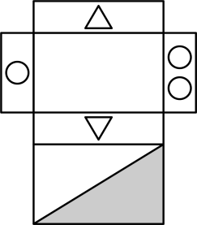
A． B．
B．
C． D．
D．
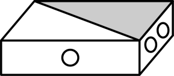
【答案】B
【分析】根据展开图可知，有小三角形的两个面是对面，有圆圈的两个面是对面，有两个圆圈的面与有三角形阴影的面相邻，相邻处是有阴影的部分．本题主要考查了几何体的展开图，熟练掌握长方体的展开图是解题关键．
【详解】解：由展开图的知识可知，有小三角形的两个面是对面，故A错误；
有圆圈的两个面是对面，故D错误；
有两个圆圈的面与有三角形阴影的面相邻，相邻处是有阴影的部分，故C错误，B正确；
故选：B．
3．（24-25七年级上·陕西安康·阶段练习）下列平面图形能折叠成圆柱的是（ ）
A． B．
C． D．
D．
【答案】A
【分析】本题主要考查了圆柱的侧面展开图，熟练掌握圆柱的侧面展开图的样子是解题的关键．
根据圆柱的侧面展开图即可得到答案．
【详解】解：A.该选项图形可以折叠成圆柱，符合题意；
B. 该选项图形可以折叠成五棱柱，不符合题意；
C. 该选项图形可以折叠成圆锥，不符合题意；
D. 该选项图形可以折叠成三棱柱，不符合题意；
故选：A．
【考点3 从不同方向看几何体】
1．（25-26七年级上·广东·期末）篆刻是中华传统艺术之一、如图是一块雕刻印章的材料，从正面看这个印章，得到的平面图形是（ ）

A． B．
B．
C．
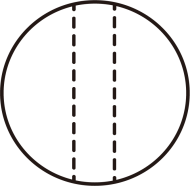
D．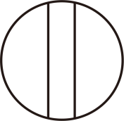
【答案】B
【分析】本题考查从不同方向看几何体；画出从正面看这个印章的平面图形，进行作答即可．
【详解】解：这个组合体从正面看，得到的平面图形如图所示：
故选：B．
2．（25-26七年级上·内蒙古包头·期中）某几何体看到的图形如图所示，则该几何体为（ ）

A． B．
B．
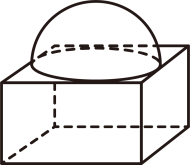
C． D．
D．
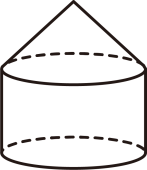
【答案】D
【分析】本题考查了从不同方向上看几何体，根据从前面、左面、上面看到的图形形状，判断该几何体的组成部分，从而即可确定选项，正确识图是解题的关键．
【详解】解：从前面看是三角形和长方形，从左面看是三角形和长方形，从上面看是圆，由此可知该几何体下半部分是圆柱，上半部分是圆锥，
故选：D．
3．（25-26七年级上·四川成都·期中）小颖将几盒粉笔整齐地摞在讲台桌上，同学们发现从正面、左面、上面三个方向看到的粉笔形状如图所示，那么这摞粉笔一共有 盒．

【答案】6
【分析】本题考查的是从不同方向看几何体，根据从正面与左面看到的图形结合从上面看到的图形可得答案．
【详解】解：根据从正面看到的图形可知，这摞粉笔由两层，根据从上面看到的图形可知，第一层粉笔有5盒，根据从左边看到的图形可知，第二层有1盒，
如图，
所以，共有6盒．
故答案为：6．
【考点4 点、线、面、体】
1．（25-26七年级上·山东枣庄·月考）生活中有如下现象：
①用钢笔写字；②银行大堂的旋转门旋转一周；③黑板擦在黑板上擦出一片干净区域；④抛出一块石子，石子在空中飞行的路线；⑤硬币立在桌面上旋转一周；⑥车轮上的钢条绕轴转动．
其中能说明“点动成线”的有 ；能说明“线动成面”的有 ；能说明“面动成体”的有 ．（均填序号）
【答案】 ①④ ③⑥ ②⑤
【分析】本题考查了点、线、面、体的知识．根据点动成线，线动成面，面动成体的特征对各选项分析判断后利用排除法求解即可．
【详解】解：①用钢笔写字，能说明“点动成线”；
②银行大堂的旋转门旋转一周，能说明“面动成体”；
③黑板擦在黑板上擦出一片干净区域，能说明“线动成面”；
④抛出一块石子，石子在空中飞行的路线，能说明“点动成线”；
⑤硬币立在桌面上旋转一周，能说明“面动成体”；
⑥车轮上的钢条绕轴转动，能说明“线动成面”．
故答案为：①④；③⑥；②⑤．
2．（25-26七年级上·广东深圳·期中）将下列平面图形绕轴旋转一周，可得到图中所示的立体图形的是（ ）

A．
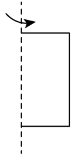
B． C．
C．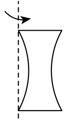
D．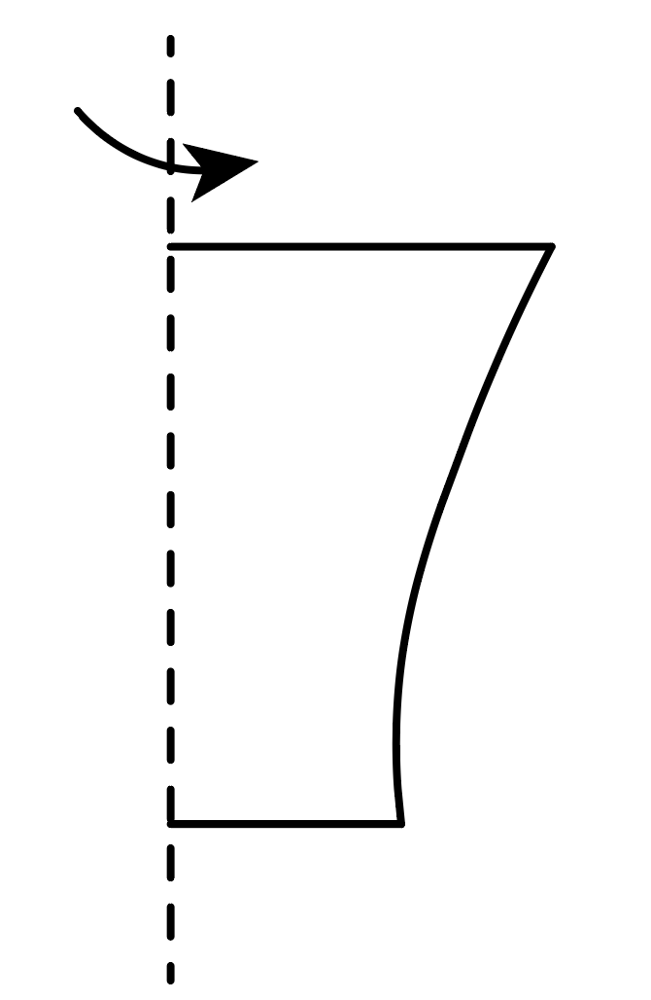
【答案】D
【分析】此题主要考查了点、线、面、体，关键是掌握面动成体．从运动的观点来看，点动成线，线动成面，面动成体，分别判断各选项是否可得到图中所示的立体图形．
【详解】解：绕轴旋转一周，可得到图中所示的立体图形的是：
故选：D．
3．（25-26七年级上·河北保定·阶段练习）如图是一张长方形纸片，长方形的长为8cm，宽为4cm，若将此长方形纸片绕它的一边所在直线旋转一周，形成的几何体是 ，该几何体的体积是 (结果保留π)
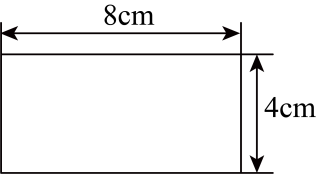
【答案】 圆柱 256πcm3或128πcm3
【分析】本题考查了点、线、面、体，若将此长方形纸片绕它的一边所在直线旋转一周，则形成的几何体是圆柱；据此即可求解，再根据题意可得，圆柱的底面半径为8cm，高为4cm或底面半径为4cm，高为8cm，再根据圆柱的体积公式进行计算即可解答，熟练掌握圆知识点的应用是解题的关键．
【详解】解：将此长方形纸片绕它的一边所在直线旋转一周，形成的几何体是圆柱；
将此长方形纸片绕它的长所在直线旋转一周形成的几何体是圆柱的底面半径为8cm，高为4cm，体积为π×82×4=256πcm3；
将此长方形纸片绕它的宽所在直线旋转一周形成的几何体是圆柱的底面半径为4cm，高为8cm，体积为π×42×8=128πcm3；
故答案为：圆柱；256πcm3或128πcm3．
【考点5 截一个几何体】
1．（25-26七年级上·陕西咸阳·期中）用一个平面去截如图所示的正方体，得到的截面形状不可能是（ ）
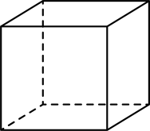
A．三角形 B．正方形 C．长方形 D．圆形
【答案】D
【分析】此题考查了截一个几何体，用到的知识点为：截面经过正方体的几个面，得到的截面形状就是几边形．正方体有六个面，用平面去截正方体时最多与六个面相交得六边形，最少与三个面相交得三角形．
【详解】解：∵用平面去截正方体时最多与六个面相交得六边形，最少与三个面相交得三角形，
∴最多可以截出六边形，也可以是正方形和长方形，不可能是圆形．
故选：D．
2．（25-26六年级上·山东淄博·期中）用一个平面去截一个几何体，截面形状可以有圆、长方形，这个几何体可能是 ．
【答案】圆柱
【分析】本题考查截一个几何体的截面形状，掌握相关知识是解决问题的关键．根据几何体的截面性质，圆柱的截面可以是圆或长方形．
【详解】解：用一个平面平行于圆柱的底面截取，截面形状是圆；用一个平面垂直于圆柱的底面截取，截面形状是长方形．因此，这个几何体可能是圆柱．
故答案为：圆柱．
3．（25-26六年级上·山东威海·期中）如图，一个正方体截去一个角后，剩下的几何体面的个数记为f，棱的条数记为c，顶点数记为v，则c+v−f为（ ）
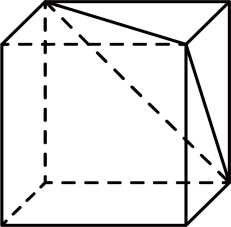
A．12 B．14 C．16 D．18
【答案】A
【分析】此题考查了截一个几何体，解决本题的关键是找到在原来几何体的基础上增加的面和棱数和顶点数．
分别求出截去一个角后，剩下的几何体面、棱、顶点的个数即可．
【详解】解：如图，一个正方体截去一个角后，剩下的几何体面的个数是f=6+1=7，棱的条数是c=12−3+3=12，顶点数v=8−1=7，
∴c+v−f=12+7−7=12
故选：A．
【考点6 正方体的展开图】
1．（25-26七年级上·广东清远·月考）下列平面图形中不能围成正方体的是（ ）
A． B．
B．
C． D．
D．
【答案】B
【分析】本题考查了正方体的平面展开图，熟练掌握正方体的平面展开图的特征是解题关键．根据正方体的平面展开图的特征判断即可得．
【详解】解：正方体的平面展开图共有11种情况：“1−4−1型”有6种，“2−3−1型”有3种，“2−2−2型”有1种，“3−3型”有1种，则选项A、C、D能围成正方体，
由常见的不能围成正方体的展开图的形式“一线不过四，田、凹应弃之”可知，选项B不能围成正方体，
故选：B．
2．（25-26七年级上·山西运城·期中）如图，这是一个正方体的展开图，每个面上都标有一个有理数，且相对的面上的有理数互为相反数，则x+y−z= ．
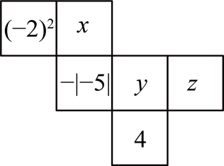
【答案】−13
【分析】本题主要考查正方体展开图及含乘方的有理数混合运算，熟练掌握正方体展开图及含乘方的有理数混合运算是解题的关键；由正方体展开图可知x=−4,y=−−22=−4,z=−−−5=5，然后代入进行求解即可．
【详解】解：∵正方体展开后，相对的面上的有理数互为相反数，
∴由正方体展开图可知x=−4,y=−−22=−4,z=−−−5=5，
∴x+y−z=−4+−4−5=−13；
故答案为−13．
3．（25-26七年级上·山东青岛·月考）小明用纸（如图）折成一个正方体盒子，里面装入礼物，与其他三个大小一样的正方体空盒子混在一起，根据观察，礼物所在的盒子是（ ）

A．
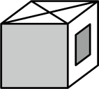
B． C．
C．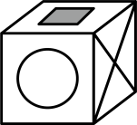
D．
【答案】B
【分析】
本题考查了正方体的平面展开图，熟练掌握正方体的平面展开图特征是解题关键．根据正方体的平面展开图可得与是两个相对的面，由此即可得．
【详解】
解：由正方体的平面展开图可知，礼物所在的盒子是．
故选：B．
【考点7 正数和负数】
1．（25-26七年级上·陕西西安·期中）若GDP同比“减少2%”记为−2%，那么“增长12.5%”可以记为（ ）
A．+12.5% B．−12.5% C．+10.5% D．−10.5%
【答案】A
【分析】本题考查相反意义的量，解题关键是理解“正”和“负”的相对性，确定一对具有相反意义的量．
根据题意，减少记为负，增长记为正，据此求解即可．
【详解】解：∵减少2%记为−2%，
∴增长12.5%应记为+12.5%，
故选A．
2．（25-26七年级上·山东·阶段练习）我国是较早认识负数的国家，金元时期数学家李冶创造了在数字上画斜杠表示负数的方法（如图①）．按照这样的规则，如图②所示的数是 ．

【答案】307
【分析】本题考查了正数与负数，熟练掌握负数的意义，以及题目中表示负数的符号是解本题的关键．
根据正数和负数表示相反意义的量再结合图①可知，在算筹的个位数上用斜画一杠表示负数，即可得答案．
【详解】解：由图①可知，在算筹的个位数上用斜画一杠表示负数，
故表示的是307
故答案为：307．
3．（25-26七年级上·江苏常州·期中）在−2，−2，−23，−−2，−22这五个数中，负数有（ ）
A．2个 B．3个 C．4个 D．5个
【答案】B
【分析】本题考查了求乘方，求绝对值，求相反数，负数的定义．
先计算乘方，绝对值，相反数，再根据负数的定义作答即可．
【详解】解：−2=2>0，为正数；
−2<0，为负数；
−23=−8<0，为负数；
−−2=2>0，为正数；
−22=−4<0，为负数．
∴负数有3个：−2，−23，−22．
故选：B．
4．（25-26七年级上·陕西西安·期中）“大唐诗人”主题盲盒受到年轻消费者青睐．某商店购进一批盲盒，每个盲盒进价为30元．为测试市场反应，前五天试行浮动定价，以40元为标准价，超出部分记为正，不足部分记为负．销售记录如下表：
日期 | 第1天 | 第2天 | 第3天 | 第4天 | 第5天 |
售价相对于标准价（元） | +2 | −3 | +4 | −1 | +6 |
售出数量（个） | 25 | 40 | 15 | 30 | 10 |
(1)这五天中，单个盲盒最高售价是多少元？最高售价比最低售价多多少元？
(2)求前五天该店出售这批盲盒的总利润．
【答案】(1)单个盲盒最高售价是最高46元，最高售价比最低售价多9元
(2)1220元
【分析】本题考查了有理数的混合运算的应用、正负数的应用，理解题意，正确列式计算是解此题的关键．
（1）由表格可得第一周该店出售这批盲盒，单价最高的是星期五，再利用有理数的加法和减法计算即可得解；
（2）根据题意列式计算即可得解．
【详解】（1）解：由表格可得，该店前五天出售这批盲盒中，最高售价是40+6=46元，
最高单价比最低单价多6−−3=9元．
（2）解：由题意得2×25−3×40+4×15−1×30+6×10+40−30×25+40+15+30+10
=50−120+60−30+60+10×120
=20+1200
=1220（元），
∴前五天该店出售这批盲盒的总利润为1220元．
【考点8 有理数的概念】
1．（25-26七年级上·广西桂林·期中）下列说法：①0既不是正数也不是负数；②整数包括正整数和负整数；③正数和负数统称有理数；④0是最小的整数；⑤负分数是有理数．其中正确的有（ ）
A．1个 B．2个 C．3个 D．5个
【答案】B
【分析】本题主要考查了有理数的分类，“0”的意义，0既不是正数也不是负数，整数分为正整数，负整数和0，有理数分为整数和分数，有理数也分为正有理数，负有理数和0，据此逐一判断即可．
【详解】解： ①0既不是正数也不是负数，原说法正确；
②整数包括正整数、负整数和0，原说法错误；
③有理数是整数和分数的统称，原说法错误；
④整数中有负整数小于0，原说法错误；
⑤负分数是有理数，原说法正确；
∴ 正确的有①⑤，共2个，
故选：B．
2．（25-26七年级上·福建福州·期中）在−8，2020，327，0，−5，+π，14，−6.9中，非负整数有m个，正有理数有n个，则m+n的值为（ ）
A．3 B．4 C．5 D．6
【答案】C
【分析】本题考查有理数的分类，有理数的加法．非负整数包括正整数和零，正有理数是正数且有理数，据此求出m和n的值，然后相加即可．
【详解】解：∵非负整数有2020和0，共2个，
∴m=2．
∵正有理数有2020、327、14，共3个，
∴n=3，
∴m+n=2+3=5．
故选C．
3．（25-26七年级上·湖北武汉·阶段练习）把下列各数的序号填在相应的大括号里：
①0；②3.1415926；③200%；④−2020；⑤−6.1·43·；⑥π；⑦−227；⑧−−3．
整数：{____________ }；
分数：{____________ }；
非负整数：{____________ }；
正有理数：{____________ }．
【答案】①,③,④,⑧；②,⑤,⑦；①,③；②,③
【分析】本题重点考查有理数的分类（包括整数、分数、非负整数、正有理数），明确各类数的定义并准确判断每个数所属类别是解题的关键．
根据有理数的分类填写即可．
【详解】解：−−3=−3，200%=2，
整数：①,③,④,⑧；
分数：②,⑤,⑦；
非负整数：①,③；
正有理数：②,③．
4．（25-26六年级上·山东泰安·期中）已知有理数a，b，c满足：a到原点的距离是4，b是最小的正整数，c=2且c<a，则a−b+c的可能值有几个（ ）
A．1 B．2 C．3 D．4
【答案】B
【分析】本题考查了绝对值的意义，有理数的分类，有理数的加减等知识﹒先根据题意得到a=4，b=1，c=2或c=−2，再分类计算即可求解﹒
【详解】解：∵a到原点的距离是4，
∴a=4或a=−4，
∵b是最小的正整数，
∴b=1，
∵c=2 ，
∴c=2或c=−2，
∵c<a，
∴a=4﹒
当a=4，b=1，c=2时，a−b+c=4−1+2=5；
当a=4，b=1，c=−2时，a−b+c=4−1+−2=4−1−2=1﹒
故选：B
【考点9 数轴】
1．如图，将刻度尺放在数轴上，让3cm和5cm刻度线分别与数轴上表示2和4的两点重合对齐，则数轴上与0cm刻度线对齐的点表示的数为（ ）

A．−2 B．−1 C．0 D．1
【答案】B
【分析】本题考查在数轴上表示有理数，关键是掌握数轴的三要素．由数轴的概念即可求解．
【详解】解：∵3cm和5cm刻度分别与数轴上表示2和4的两点对齐，
∴数轴的单位长度是1 cm，
∴原点对应1 cm的刻度，
∴数轴上与0cm刻度线对齐的点表示的数是−1，
故选：B．
2．（25-26七年级上·吉林长春·月考）点A在数轴上距原点5个单位长度，将点A先向右移动3个单位长度，再向左移动7个单位长度，得到点B，则点B表示的数是（ ）
A．1或−9 B．−1或9 C．1或9 D．−1或−9
【答案】A
【分析】本题考查了数轴上点的移动，数轴上表示的数，由题意可得点A表示的数是−5或5，分两种情况求解即可，掌握相关知识是解题的关键．
【详解】解：∵点A在数轴上距原点5个单位长度，
∴点A表示的数为：−5或5，
当点A表示的数为−5时，−5+3−7=−9，
当点A表示的数为5时，5+3−7=1，
∴点B表示的数是1或−9，
故选：A．
3．（25-26七年级上·河南洛阳·期中）有理数a、b在数轴上的对应点如图所示，
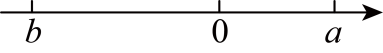
则下列式子：①b<0<a；②b<a；③ab>0；④a−b>a+b，其中正确的是（ ）
A．①② B．①④ C．②③ D．③④
【答案】B
【分析】本题考查数轴上有理数的位置与有理数的运算性质，解题的关键是根据数轴判断a、b的符号．绝对值大小，再分析各式子的正确性．
根据数轴确定a、b的符号与绝对值关系，逐一分析四个式子的正确性．
【详解】由数轴可知：b在原点左侧，a在原点右侧，故b<0<a，且b到原点的距离大于a到原点的距离，即|b|>|a|，
①b<0<a：由数轴位置可知，此结论正确；
②|b|<|a|：由数轴上b到原点的距离更远，可知|b|>|a|，此结论错误；
③ab>0：因为a>0,b<0，异号两数相乘得负，故ab<0，此结论错误；
④a−b>0>a+b：即a−b>a+b，此结论正确．
综上，正确的是①④，
故选：B．
4．（25-26七年级上·安徽芜湖·期中）正六边形ABCDEF在数轴上的位置如图所示，点A和F对应的数分别为1和0，若正六边形ABCDEF绕顶点逆时针方向在数轴上向左连续翻转，翻转1次后，点E所对应的数为−1．按此规律继续翻转下去，数轴上−2025所对应的顶点是（ ）
A．A B．B C．C D．D
【答案】C
【分析】本题考查数轴，掌握数轴表示数的方法以及正六边形翻滚时所对应数的变化规律是正确解答的关键．
根据翻滚规律以及各个顶点所对应的数即可得出答案．
【详解】解：根据题意得： 点E所对应的数为−1，
点D所对应的数为−2，
点C所对应的数为−3，
点B所对应的数为−4，
点A所对应的数为−5，
点F所对应的数为−6，
∵2025÷6=337⋯⋯3，
数轴上−2025所对应的顶点是C．
故选：C．
【考点10 相反数】
1．（25-26七年级上·广西钦州·期中）−7的相反数是 ．
【答案】7
【分析】本题主要考查了相反数的定义，
根据相反数的定义，只有符号不同的两个数称互为相反数，解答即可．
【详解】解：−7的相反数是7．
故答案为：7．
2．（25-26七年级上·河南新乡·期中）−−+7= ．
【答案】7
【分析】此题考查了多重符号的化简．从内向外逐步化简即可．
【详解】解：计算过程如下：−−+7=−−7=7
故答案为：7
3．（25-26七年级上·湖南岳阳·期中）若m+1与−6互为相反数，则m的值为 ．
【答案】5
【分析】本题主要考查相反数的意义，熟练掌握相反数的意义是解题的关键；根据相反数的定义，两个数互为相反数则它们的和为零，由此列出方程求解即可．
【详解】解：由m+1与−6互为相反数，可知m+1+−6=0，
即m+1−6=0，解得m=5；
故答案为5．
4．已知a、b互为相反数，那么a−5+b= ．
【答案】−5
【分析】直接利用互为相反数的和为0计算得出答案．
【详解】解：∵a、b互为相反数，
∴a+b=0，
∴a−5+b=0−5=−5．
故答案为：−5．
【点睛】此题主要考查了相反数，正确掌握相关性质是解题关键．
【考点11 绝对值】
1．（25-26七年级上·山东济宁·期中）绝对值是4的数有 ．
【答案】±4
【分析】本题考查了绝对值的几何意义，绝对值表示一个数在数轴上到原点的距离，距离为4的点有两个，分别是4和−4．
【详解】解：根据绝对值的定义，绝对值是4的数有两个：4和−4，
故答案为：±4．
2．（25-26七年级上·黑龙江哈尔滨·月考）−4+4= ．
【答案】8
【分析】本题考查有理数的加法运算，根据绝对值的定义，负数的绝对值是它的相反数，正数的绝对值是它本身，然后进行有理数加法运算．
【详解】解：−4+4=4+4=8，
故答案为：8．
3．（25-26七年级上·黑龙江七台河·期中）若a<1，3−a−a−1的化简结果为 ．
【答案】2
【分析】本题考查绝对值．
根据绝对值的定义，结合已知，化简计算即可．
【详解】∵解：a<1，
∴3−a>0，a−1<0，
∴3−a−a−1
=3−a−−a−1
=3−a+a−1
=3−1
=2．
故答案为：2．
4．计算x−1+x+2的最小值为（ ）
A．0 B．1 C．2 D．3
【答案】D
【分析】由x−1+x+2 =x−1+x−−2，可得x−1+x−−2表示在数轴上点x与1和−2之间的距离的和，即可求解．
【详解】解：∵ x−1+x+2
=x−1+x−−2，
∴ x−1+x−−2表示在数轴上点x与1和−2之间的距离的和，
∴当−2≤x≤1时，
x−1+x+2有最小值3．
故选：D．
【点睛】本题主要考查了绝对值的应用，数轴上两点之间的距离，理解绝对值的意义，掌握距离的求法是解题的关键．
【考点12 绝对值的非负性】
1．若a−1与b+2互为相反数，则a+b−12的值为 ．
【答案】−32
【分析】直接利用非负数的性质得出a，b的值，进而代入得出答案．
【详解】解：∵a−1与b+2互为相反数，
∴a−1=0，b+2=0，
∴a=1，b=−2，
∴a+b−12=1+−2−12=−32，
故答案为：−32
【点睛】此题主要考查了绝对值的非负性，正确得出a，b的值是解题关键．
2．（25-26七年级上·广东茂名·期中）若a是任意的有理数，则式子2025−a−2025的最大值是 ．
【答案】2025
【分析】本题考查了绝对值的性质及有理数的大小比较．根据绝对值的非负性，a−2025≥0，当a−2025取最小值0时，原式取得最大值．
【详解】解：当a>2025时，2025−a−2025=2025−a−2025=4050−a，
∵a>2025，
∴4050−a<2025；
当a=2025时，2025−a−2025=2025−0=2025；
当a<2025时，2025−a−2025=2025−2025−a=a<2025，
综上所述，2025−a−2025的最大值为2025，
故答案为：2025．
3．（25-26七年级上·福建福州·期中）若a、b为整数，且a−2+a−b=1，则a+b的值有（ ）种可能的结果．
A．1 B．2 C．3 D．4
【答案】D
【分析】本题考查绝对值的意义，有理数的加法运算，根据题意，易得a−2=1,a−b=0或a−2=0,a−b=1，进行求解即可．
【详解】解：∵a、b为整数，且a−2+a−b=1，a−2≥0,a−b≥0，
∴a−2=1,a−b=0或a−2=0,a−b=1，
∴a=b=3或a=b=1或a=2,b=1或a=2,b=3，
∴a+b=3+3=6或a+b=1+1=2或a+b=2+1=3或a+b=2+3=5；
故共有4种等可能的结果．
4．a，b，c满足等式a+12=1−c,b+1=c+1，且c是整数，则2a+3b−4c的值为（ ）
A．0 B．12 C．±1 D．2
【答案】C
【分析】本题主要考查了绝对值的应用，代数式求值，解题的关键是根据a+12=1−c，得出c≤12，根据b+1=c+1，得出c≥0，再根据c为整数，得出c=0，求出a=±12，b=0，代入求出结果即可．
【详解】解：∵a+12=1−c，
∴a=1−c−12=12−c，
∵a≥0，
∴12−c≥0，
∴c≤12，
∵b+1=c+1，
∴c=b≥0，
∴0≤c≤12，
∵c为整数，
∴c=0，
∴a=12−c=12，c=b=0，
∴a=±12，b=0，
∴2a+3b−4c=2×12+0−0=1或2a+3b−4c=2×−12+0−0=−1，
∴2a+3b−4c的值为±1；
故选：C．
【考点13 有理数的大小比较】
1．（25-26七年级上·河南许昌·期中）比较大小：−23 −−34（填“>”或“<”）．
【答案】>
【分析】本题主要考查负数比较大小；根据两个负数比较大小，绝对值大的其值反而小，解答即可．
【详解】解：−−34=−34．
−23=23=812，−34=34=912，且812<912．
−23>−34，即−23>−−34．
故答案为：>．
2．（25-26七年级上·福建泉州·期中）有理数a，b在数轴上的对应点的位置如图所示，则比较a×b与a÷b的大小，结果是（ ）
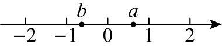
A．a÷b比较大 B．a×b比较大 C．两者相等 D．无法比较
【答案】B
【分析】本题主要考查了数轴，有理数的乘法和除法法则，有理数的大小的比较，解题的关键是掌握分类讨论和数形结合的思想．
根据数轴得出−1<b<0<a<1，然后得出−1<a×b<0，分三种情况讨论a÷b的值．
【详解】解：根据数轴得−1<b<0<a<1，
∴−1<a×b<0，
如果a>b时，a÷b<−1，a×b>a÷b；
如果a<b时，可令a=35,b=−45，则a×b=−1225,a÷b=−34，
∵−1225>−34，
∴a×b>a÷b；
如果a=b时，a÷b=−1，a×b>a÷b；
综上a×b>a÷b，
故选：B．
3．（25-26七年级上·福建泉州·期中）若a<0，b>0，则b，b−a，b+ab，ab中最大的一个数是（ ）
A．b B．b−a C．b+ab D．ab
【答案】B
【分析】本题主要考查有理数的加减法，乘法及大小比较，熟练掌握有理数的加减法，乘法及大小比较是解题的关键；由于a<0且b>0，可知ab<0，因此ab为负数，而b−a>b>0，且通过比较b−a与b+ab，可得b−a>b+ab，故b−a最大，然后问题可求解．
【详解】解：∵a<0，b>0，
∴ab<0，即ab为负数，
又∵a<0，∴−a>0，
∴b−a=b+−a>b，即b−a>b，
现在比较b−a=b+−a和b+ab，因为都含有数字b，根据同一个数加上一个正数肯定比这个数加上一个负数要大，所以b−a>b+ab，
综上，b−a>b，b−a>b+ab，且b−a>ab，
∴b−a是最大的数；
故选B．
4．mina,b表示a，b两数中的最小者，maxa,b表示a，b两数中的较大者，如min−3,5=−3，max−3,5=5，则maxmax−13,−1,min−34,−23是（ ）
A．−13 B．−1 C．−34 D．−23
【答案】A
【分析】根据“mina,b表示a，b两数中的最小者，maxa,b表示a，b两数中的较大者”，先确定max−13,−1和min−34,−23，得到max−13,−34，再根据法则即可解答．
【详解】解：∵−13>−1，−34<−23
∴max−13,−1=−13，min−34,−23=−34，
∴maxmax−13,−1,min−34,−23=max−13,−34=−13，
故选：A．
【点睛】本题主要考查了新定义中的有理数的大小比较，解题的关键是理解题中给出的运算法则．
【考点14 有理数的加法】
1．（25-26七年级上·山西晋中·期中）一个整数加−13，和小于0，则这个整数可能是 ．（写出一个整数即可）
【答案】12（答案不唯一）
【分析】本题考查了有理数的加法运算，同号两数相加，取与加数相同的符号，并把绝对值相加；绝对值不等的异号两数相加，取绝对值较大的加数的符号，并用较大的绝对值减去较小的绝对值；互为相反数相加得0；任何数与0相加仍得原数．
根据加法法则求解即可．
【详解】解：∵一个整数加−13，和小于0，
∴这个整数的绝对值小于13，可以是 12，此时12+−13=−13−12=−1，符合题意．
故答案为：12（答案不唯一）．
2．（25-26七年级上·河北衡水·期中）如图，直尺中1cm处对应的数轴上的数与5cm处对应的数轴上的数的和为 ．

【答案】1
【分析】本题考查有理数与数轴，根据图形，得到直尺中1cm处对应的数轴上的数和5cm处对应的数轴上的数，求和即可．
【详解】解：由图可知，数轴上的一个单位长度对应刻度尺上2cm，
∴直尺中1cm处对应的数轴上的数与5cm处对应的数轴上的数分别为−0.5和1.5，
−0.5+1.5=1；
故答案为：1．
3．（25-26七年级上·四川广元·期中）有下列四个算式①(−5)+(+3)=−8；②−−23=6；③(+56)+(−16)=46=23；④−3+(−13)=9．其中，正确的有（ ）．
A．0个 B．1个 C．2个 D．3个
【答案】B
【分析】本题主要考查了有理数的加减运算、乘方运算，熟练掌握有理数的运算法则是解题的关键．
逐一计算四个算式的结果，判断其正确性，统计正确算式的数量．
【详解】解：(−5)+(+3)=−2≠−8，故①错误；
−(−2)3=−(−8)=8≠6，故②错误；
(+56)+(−16)=46=23，故③正确；
−3+(−13)=−16≠9，故④错误．
综上，正确的算式有1个．
故选：B．
4．（25-26七年级上·河南商丘·期中）如图是一种转盘型密码锁，每次开锁时需要先把表示“0”的刻度线与固定盘上的标记线对齐，再依据三个密码按顺时针或逆时针方向旋转带有刻度的转盘即可解锁．已知顺时针方向转动m个小格记为“−m”，逆时针方向转动n个小格记为“+n”若密码为“+15，−7，−3”，则顺利开锁时，标记线对准的刻度线表示的数是 ．

【答案】5
【分析】本题主要考查了有理数加法运算的应用，根据题意列出算式，然后再进行计算即可．
【详解】解：+15+−7+−3=5，
∴顺利开锁时，标记线对准的刻度线表示的数是5，
故答案为：5．
【考点15 有理数的减法】
1．（25-26七年级上·山东临沂·期中）把−478−−512−+318写成省略括号和加号的形式为 ．
【答案】−478+512−318
【分析】本题考查有理数的加减混合运算，根据有理数的减法法则，减去一个数等于加上它的相反数，将原式中的减法转换为加法，并省略括号和加号．
【详解】解：把−478−−512−+318写成省略括号和加号的形式为−478+512−318．
故答案为：−478+512−318．
2．（25-26七年级上·山西阳泉·期中）用1个“⊕”表示“+1”，用1个“
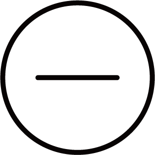
”表示“−1”，图1可以解释算式“3−−1=4”的运算过程与结果，类似地，图2可以解释算式“ ”的运算过程与结果．
【答案】−4−−2=−2
【分析】
本题考查了有理数的减法，正确理解题意，列出运算式子是解题关键．根据用1个“⊕”表示“+1”，用1个“”表示“−1”列出运算过程，再计算有理数的减法即可得．
【详解】解：由题意可知，图2可以解释算式“−4−−2=−2”的运算过程与结果．
故答案为：−4−−2=−2．
3．（25-26七年级上·黑龙江佳木斯·期中）甲地海拔300m，乙地海拔−50m，则甲地比乙地高 m．
【答案】350
【分析】本题主要考查有理数减法的应用，计算甲地海拔与乙地海拔的差值即可．
【详解】解：甲地海拔300m，乙地海拔−50m，
所以，甲地比乙地高的高度为：300−(−50)=300+50=350(m)，
故答案为：350．
4．（25-26七年级上·山东滨州·期中）我们平常生活中用的是10进制进行计算，如27+158，在进行计算时两数最右边对齐，7+8=15，满10后5留在最右边，向左进一，从而结果为185；在计算减法35−18时，最右边一位对齐，向左借位，借一得十，结果为17．在古代，有个部落采用的是五进制，满五进一．即当数字为8时，记做135，那么类比十进制的加减法，在计算1235−335时，它的结果为 （答案也记录为五进制）．
【答案】405
【分析】本题考查进制运算，读懂题意，理解进制运算方法是解决问题的关键．
直接进行五进制减法运算，从右向左逐位相减，需要借位时借一当五，即可得到答案．
【详解】解：由阅读材料中的方法可知，1235−335=405，
故答案为：405．
【考点16 有理数的加减混合运算】
1．（25-26七年级上·辽宁沈阳·期中）计算−1+2−3+4−5+6−7+8−⋅⋅⋅−2023+2024= ．
【答案】1012
【分析】本题主要考查了有理数的加减计算，将原式每两个相邻的数分组，每组和均为1，计算组数即可得总和．
【详解】解：−1+2−3+4−5+6−7+8−⋅⋅⋅−2023+2024
=−1+2+−3+4+−5+6+−7+8+⋅⋅⋅+−2023+2024
=1+1+1+1+⋯+1一共1012个1
=1012，
故答案为：1012．
2．（24-25七年级上·河北沧州·期末）要使式子“613−78+□”能用运算律进行简便运算，“□”里填上的数是 ．（写出一个合适的即可）
【答案】713（答案不唯一）
【分析】本题考查了有理数的加减混合运算，解题的关键是加法运算律的运用．根据题意知，分母与题干中的分母相同可以运用加法的交换律和结合律，据此求解即可．
【详解】解：当“□”里的数为分母含有13或8时，可用交换律和结合律，
即613−78+713=(613+713)−78=1313−78=1−78=18；
故答案为：713（答案不唯一）．
3．（25-26七年级上·河北保定·期中）如图，a,b,c,d都是有理数，若每个圆圈里的数都等于与它相邻的两个圆圈里数的和，则b+c=（ ）

A．4 B．3 C．−2 D．−4
【答案】A
【分析】本题主要考查了有理数加法和减法的实际应用，理解题意是解决本题的关键．
根据“每个圆圈里的数都等于与它相邻的两个圆圈里数的和”求解即可．
【详解】解：根据题意得，由−3=a+−1，得a=−2；
由a=b+−3，得b=−2+3=1；
由−1=−3+d，得d=2；
由d=−1+c，得c=2+1=3；
∴b+c=1+3=4，
故选A．
4．（25-26七年级上·安徽安庆·期中）利用有理数的加法解决下列各题：
(1)一天早晨的气温是−7℃，中午上升了11℃，晚上又下降了9℃，则晚上的气温是多少？
(2)一家电脑公司的仓库原有电脑100台，一个星期调入、调出电脑的记录是：调入38台，调出42台，调入27台，调出33台，调入40台，则这个仓库现有电脑多少台？
【答案】(1)−5℃
(2)130台
【分析】本题考查正负数的意义，有理数加法的实际应用．读懂题意，正确的列出算式，是解题的关键．
（1）设上升为正，则下降为负，将所有数据相加，即可．
（2）设调入为正，则调出为负，将所有数据相加，即可．
【详解】（1）解：−7+11−9=−5℃
答：晚上的气温是−5℃；
（2）解：100+38−42+27−33+40=130 台
答：这个仓库现有电脑130台.
【考点17 有理数的乘法】
1．（25-26六年级上·山东淄博·期中）请你列举两个有理数，使它们的积为1． ．
【答案】2和12（答案不唯一）
【分析】该题考查了有理数的乘法，倒数，寻找两个有理数，使它们的乘积为1，即两个数互为倒数．
【详解】解：设两个有理数为2和12，则它们的积为2×12=1，满足条件．
故答案为：2和12（答案不唯一）．
2．（25-26七年级上·贵州铜仁·阶段练习）大于−2.1且小于3.9的所有整数之积是 ．
【答案】0
【分析】本题考查了有理数的乘法，熟练掌握运算法则是解题的关键．先找出大于−2.1且小于3.9的所有整数，再计算这些整数的积即可．
【详解】解：大于−2.1且小于3.9的所有整数是−2，−1，0，1，2，3，
所以−2×−1×0×1×2×3=0，
故答案为：0.
3．（25-26七年级上·宁夏银川·期中）下列四个有理数−3、0、1、－2，任取两个相乘，积最大为 ．
【答案】6
【分析】题考查了有理数的乘法，掌握两数相乘，同号得正，异号得负，并把绝对值相乘是解题的关键．通过计算所有可能的两数乘积，并比较大小，找到最大值．
【详解】解：所有可能的乘积为：−3×0=0，−3×1=−3，−3×−2=6，0×1=0，0×−2=0，1×−2=−2，其中最大值为6，
故答案为：6．
4．（25-26九年级上·黑龙江哈尔滨·期中）一台织布机平均每小时织布1100千米，某织布厂有500台这样的织布机，12小时能织布 千米．
【答案】52/2.5
【分析】本题考查有理数的乘法运算，根据总织布量等于台数乘以每台每小时织布量再乘以时间，列式计算即可．
【详解】解：根据题意，500台织布机12小时能织布的总量为：500×1100×12=5×12=52，
故答案为52．
【考点18 倒数】
1．（25-26七年级上·江苏泰州·期中）−3的倒数是 ．
【答案】−13
【分析】本题考查了倒数的定义，掌握求一个数的倒数的方法是解题的关键．
根据倒数的定义，一个数的倒数是与之相乘等于1的数，即可求解．
【详解】解：根据倒数的定义，可知−3的倒数为−13．
故答案为：−13．
2．（25-26七年级上·云南昆明·期中）下列两个数互为倒数的是（ ）
A．20和−(−1) B．1和−1 C．−89和−98 D．−12和2
【答案】C
【分析】本题主要考查了有理数的乘法计算，倒数的定义，乘积为1的两个数互为倒数．
根据倒数的定义，两个数相乘的积为1，则它们互为倒数，分别计算各选项中两个数的乘积，判断是否等于1．
【详解】解：∵ 两数乘积为1则互为倒数。
A：20×−−1=20×1=20≠1；
B：1×−1=−1≠1；
C：−89×−98=1；
D：−12×2=−1≠1
∴ 只有C选项中的两个数互为倒数，
故选：C．
3．（25-26七年级上·山东菏泽·期中）−35的相反数的倒数是 ．
【答案】53/123
【分析】本题考查相反数和倒数的概念，先求−35的相反数，再求该相反数的倒数．
【详解】解：−35的相反数是35，35的倒数是53，
∴ −35的相反数的倒数是53，
故答案为：53．
4．（25-26七年级上·山东菏泽·期中）已知a,b互为相反数且b≠0，c,d互为倒数，则a+b2024+ba2025+−cd2024= ．
【答案】0
【分析】本题考查了相反数、倒数、代数式求值，熟练掌握相反数和倒数的定义是解题关键．先根据相反数和倒数的定义可得a+b=0，ba=−1，cd=1，再代入计算即可得．
【详解】解：∵a,b互为相反数且b≠0，
∴a+b=0，a≠0，
∴a=−b，
∴ba=b−b=−1，
∵c,d互为倒数，
∴cd=1，
∴a+b2024+ba2025+−cd2024=02024+−12025+−12024=0−1+1=0，
故答案为：0．
【考点19 有理数的除法】
1．（25-26七年级上·河北邯郸·期中）文文在计算−24÷a时，误将“÷”看成“+”，结果是−8，则−16÷a的正确结果是 ．
【答案】−1
【分析】此题考查了有理数的加减法和除法，根据误操作列出方程求出a的值，再代入正确表达式计算．
【详解】由题意得，a=−8−−24=16，
∴−16÷a=−16÷16=−1．
故答案为：−1．
2．（24-25七年级上·江苏镇江·期末）丹阳某一个啤酒厂为了回收空啤酒瓶，规定每3个空啤酒瓶可以换一瓶啤酒，李琛3人一共买了一箱（共12瓶），可以借1个空瓶，那么他们还可以再兑换 瓶啤酒．
【答案】6
【分析】本题考查了除法的应用．先把一箱啤酒共12瓶喝完，共得到12个空瓶，可以换12÷3=4瓶啤酒，再喝完，可以得4个空瓶，可以换4÷3=1…1，即得到1瓶啤酒余1个空瓶，喝完1瓶啤酒再加原来的1个空瓶，这时候剩2个空瓶，可以再借一个瓶子，换完啤酒后，喝掉一瓶，再还回去，由此即可求解．
【详解】解：12÷3=4 (瓶)
4÷3=1 (瓶)…1(个)
1+1+1=3 (瓶)
3÷3=1 (瓶)
4+1+1=6 (瓶)
他们还可以再兑换6瓶啤酒．
故答案为：6．
3．（25-26九年级上·湖北武汉·期中）你见过树木的年轮吗？从树木的年轮，可以知道树木的年龄，把树干的横截面看成圆形的，如果一棵20年树龄的树的树干直径是23cm，这棵树的半径平均每年增加（ ）

A．2320cm B．2340cm C．4023cm D．2023cm
【答案】B
【分析】本题考查了有理数除法的应用，正确理解题意是解题的关键．
根据年轮的特点即可列式求解．
【详解】解：由题意得，232÷20=2340cm，
故选：B．
4．（25-26七年级上·甘肃临夏·期中）数学老师布置了一道思考题：
“计算：−112÷13−56n，小明仔细思考了一番，用了一种特殊的方法解决了这个问题：原式的倒数为13−56÷−112=13−56×−12=−4+10=6，所以−112÷13−56=16请你运用小明的方法计算：−136÷12+19−118−23．
【答案】14
【分析】本题考查了有理数的混合运算．
−136÷12+19−118−23的倒数为12+19−118−23÷−136，求出其值，再求倒数即可．
【详解】解：−136÷12+19−118−23的倒数为12+19−118−23÷−136，
12+19−118−23÷−136
=12+19−118−23×−36
=−18−4+2+24=4，
所以−136÷12+19−118−23=14．
【考点20 有理数的乘方】
1．计算： −−33= ．
【答案】27
【分析】本题主要考查有理数的乘方运算以及去括号法则这两个知识点，解题的关键在于准确计算负数的奇次幂．计算出−33的值，去括号即可得出解．
【详解】解：−−33
=−−27
=27
故答案为：27．
2．（25-26六年级上·上海虹口·期中）如图是一个“数值转换机”，如果输出的结果为16，那么输入的a值是 ．

【答案】±6
【分析】本题考查了有理数的混合运算，熟练掌握运算法则是解题的关键．
根据“数值转换机”得到a2−4×0.5=16，然后求出a2=36，再根据乘方的逆运算求解．
【详解】解：由题意得，a2−4×0.5=16，
∴a2=36，
∵±62=36，
∴a=±6，
故答案为：±6．
3．（25-26七年级上·山东临沂·期中）观察下列表格中的数字排列规律，第⑧个表中，a−b的值为 ．
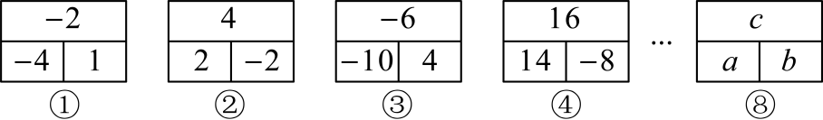
【答案】382
【分析】本题考查了数字规律的探索以及乘方的运算．找到表格中的数字排列规律是解题的关键．
探究上方数字的规律得到c=−2n，推导左右数字与上方数字的联系得到a=c−2，b=c−2，求得a，b后，即可计算a−b的值．
【详解】解：观察第①到④个表格的上方数字，
第①个−2=−21
第②个4=−22
第③个−8=−23
第④个16=−24，
由此可得c=−2n，
观察左右数字与上方数字的联系，
有a=c−2，b=c−2，
∴第⑧个表中，c=−28=256，
则a=254，b=−128，
∴ a−b=254−−128=382．
故答案为382．
4．（25-26七年级上·江苏宿迁·期中）把一个正三角形分成四个形状大小都一样的三角形，第一次挖去中间的一个小三角形，对剩下的三个小正三角形再重复以上做法……设第99次挖去后剩下的三角形个数为a，第100次挖去后剩下的三角形个数为b，那么3a−b= ．

【答案】0
【分析】本题主要考查了图形变化规律，列代数式，有理数的乘方运算．通过观察得出后一个图形剩下的三角形是前一个图形剩下的三角形的3倍是解题的关键，根据挖去的规律，每挖去一次，原来的一个三角形剩下3个，即后一个图形剩下的三角形是前一个图形剩下的三角形的3倍，根据此规律写出第个图形中剩下的三角形的个数，进而即可得解．
【详解】解：第一次挖去后剩下的三角形的个数为：3，
第二次挖去后剩下的三角形的个数为：32，
第三次挖去后剩下的三角形的个数为：33，
第四次挖去后剩下的三角形的个数为：34，
……
第n次挖去后剩下的三角形的个数为：3n，
∴第99次挖去后剩下的三角形个数为399，
第100次挖去后剩下的三角形个数为3100，
∴a=399，b=3100，
∴3a−b=3×399−3100=0．
故答案为：0．
【考点21 偶次方的非负性】
1．（25-26七年级上·山东临沂·期中）如果a+2+b−12=0，那么代数式a+b2025的值是 ．
【答案】−1
【分析】本题主要考查偶次幂与绝对值的非负性及代数式的值，熟练掌握偶次幂与绝对值的非负性及代数式的值是解题的关键；根据非负数的性质，绝对值和平方项均为非负数，它们的和为零，则每个部分必须为零，从而求出a和b的值，然后问题可求解．
【详解】解：∵a+2+b−12=0，且a+2≥0,b−12≥0，
∴a+2=0,b−12=0，
∴a=−2,b=1，
∴a+b2025=−2+12025=−1；
故答案为−1．
2．（25-26七年级上·江苏徐州·期中）若x−12+y+22=0，则xy2025= ．
【答案】−1
【分析】本题考查非负数的性质，绝对值和有理数的乘方，代数式求值，掌握知识点是解题的关键．
根据非负数的性质，绝对值和平方项均为非负数，它们的和为零，则每项均为零，从而求出x和y的值，即可解答．
【详解】解：∵x−12≥0，(y+2)2≥0，且x−12+y+22=0，
∴x−12=0且(y+2)2=0，
∴x−12=0，y+2=0，
解得x=12，y=−2，
则xy=12×−2=−1，
所以(xy)2025=(−1)2025=−1．
故答案为：−1．
3．（25-26七年级上·江苏无锡·期中）已知3x−6+3+y2=0，则yx= ．
【答案】9
【分析】本题考查了绝对值的非负性，有理数的乘方运算．
根据绝对值的非负性，平方的非负性得到x=2，y=−3，进而代入yx计算即可．
【详解】解：∵3x−6+3+y2=0，
∴3x−6=0，3+y=0，
即x=2，y=−3，
∴yx=−32=9．
故答案为：9．
4．（25-26七年级上·河南驻马店·期中）已知a+12+b+2=0，c是最小的自然数，d是最大负整数，则代数式8b−a−2c−d的值是 ．
【答案】−10
【分析】本题考查了非负数的性质，代数式求值．
根据非负数的性质，由给定等式求出a和b的值，再根据自然数和负整数的定义求出c和d的值，最后代入代数式计算．
【详解】由a+12+b+2=0，根据非负数的性质，得a+1=0且b+2=0，
解得a=−1，b=−2，
c是最小的自然数，
即c=0；
d是最大负整数，
即d=−1．
代入代数式8b−a−2c−d，
得8×−2−−1−2×0−−1=8×−1−2×1=−8−2=−10．
故答案为：−10．
【考点22 有理数的混合运算】
1．（25-26七年级上·河南南阳·期中）下列计算正确的是（ ）
A．−30×37−20×−37=1507 B．−82+72÷36=−80
C．−1÷−5×15=1 D．−45÷+45×−827=−827
【答案】B
【分析】本题考查了有理数的混合运算，根据有理数的运算法则（包括符号规则和运算顺序）进行验证，只有选项B的计算正确．
【详解】解：A：∵ −30×37 =−907， −20×−37=607，
∴ −907+607=−307≠1507，故A错误；
B：∵ 72÷36=2，∴ −82+2=−80，故B正确；
C：∵ −1÷−5=15，∴ 15×15=125≠1，故C错误；
D：∵ −45÷45=−1，∴ −1×−827=827≠−827，故D错误，
故选：B．
2．（25-26七年级上·广东中山·期中）乐乐在数学学习中遇到了神奇的“数值转换机”，按如图所示的程序运算，如果输入−3，则输出的结果是（ ）
A．−3 B．7 C．−23 D．−13
【答案】C
【分析】本题考查了有理数的混合运算，根据程序流程图列式计算即可得解，读懂程序流程图，正确列式计算是解此题的关键．
【详解】解：由程序图可知，若输入x=−3，
则−3×3−−2÷(−1)3
=−9+2÷−1
=7>−4，
∴第二次x=7，
则7×3−−2÷(−1)3
=21+2÷−1
=−23<−4，
∴输出的结果是−23，
故选：C．
3．（25-26七年级上·河南驻马店·期中）计算：
(1)−42×−34+−58
(2)−12−1−0.5÷13×3−−32
(3)8×−25−−29×−4+−8×35
【答案】(1)−22
(2)8
(3)−809
【分析】本题考查了有理数的混合运算．
（1）先计算乘方和括号里的加法，再计算乘法即可；
（2）先计算乘方，再计算括号里的减法，再计算乘除，最后计算加法即可；
（3）先计算乘法，再计算减法即可．
【详解】（1）解：−42×−34+−58
=16×−68−58
=16×−118
=−22
（2）解：−12−1−0.5÷13×3−−32
=−1−1−0.5÷13×3−9
=−1−12÷13×−6
=−1−12×3×−6
=−1+9
=8
（3）解：8×−25−−29×−4+−8×35
=−165−89−245
=−165−245−89
=−8−89
=−809
4．（25-26七年级上·福建漳州·期中）学校准备订购一批篮球和跳绳，经过市场调查后发现篮球每个定价100元，跳绳每条定价20元．某体育用品商店提供A、B两种优惠方案：
A方案：买一个篮球送一条跳绳； B方案：篮球和跳绳都按定价的90%付款．
已知要购买篮球50个，跳绳x条x>50．
(1)按A方案购买，需付款 元；按B方案购买，需付款 元．（用含x的代数式表示）
(2)当x=100时，请通过计算说明用哪种方案购买较为合算？
(3)当x=100时，发现若按A方案购买篮球50个（送50条跳绳），剩余的跳绳按B方案购买，会更省钱．请直接写出比按A方案购买省 元．
【答案】(1)20x+4000；18x+4500
(2)选择A方案购买比较合算
(3)100
【分析】（1）根据各种优惠方案列出代数式即可得解；
（2）把x=100代入两种优惠所得的代数式，分别求出A、B方案的付款，比较即可得解；
（3）用“按A方案付款”的费用减去“按A方案购买50个篮球配送50条跳绳，剩余的50条跳绳按B方案购买合计需付款”的费用即可．
【详解】（1）解：根据题意可知，
按A方案购买，一共需付款：50×100+20x−50=5000+20x−1000=20x+4000（元），
按B方案购买，一共需付款：50×100×0.9+20×0.9x=18x+4500（元），
故答案为：20x+4000；18x+4500；
（2）当x=100时，
按A方案购买需付款：20x+4000=20×100+4000=2000+4000=6000（元）；
按B方案购买需付款：18x+4500=18×100+4500=1800+4500=6300（元）；
∵6000<6300，
∴当x=100时，应选择A方案购买合算；
（3）由（2）可知，当x=100时，按A方案需付款6000元，
先按A方案购买50个篮球配送50条跳绳，再按B方案购买剩余的50条跳绳合计需付款：：100×50+20×50×90%=5000+900=5900，
∵5900<6000，且6000−5900=100（元），
∴按A方案购买篮球50个（送50条跳绳），剩余的50条跳绳按B方案购买，会更省钱，比按A方案购买省100元．
故答案为：100．
【点睛】本题考查列代数式，求代数式的值，有理数混合运算的应用，有理数大小比较的应用，读懂题意，理清数量关系是解题的关键．
【考点23 科学记数法—表示较大点的数】
1．（24-25九年级下·福建厦门·阶段练习）将867000用科学记数法表示为 ．
【答案】8.67×105
【分析】本题主要考查了科学记数法，将数据表示成形式为a×10n的形式，其中1≤a<10，n为整数，正确确定a、n的值是解题的关键．将867000写成a×10n其中1≤a<10，n为整数的形式即可．
【详解】解：867000=8.67×105．
故答案为：8.67×105．
2．（25-26七年级上·黑龙江哈尔滨·期中）若整数717…0用科学记数法表示为7.17×1013，则原数中“0”的个数为 ．
【答案】11
【分析】本题主要考查了科学记数法，熟练掌握以上知识是解题的关键．
将科学记数法表示的数还原为原数，然后统计原数中数字0的个数。
【详解】解：∵科学记数法7.17×1013，
∴整数717…0为71700000000000，
∴原数共14位，
∵其中非零数字为7、1、7，其余位均为0，
∴0的个数为14−3=11，
故答案为：11．
3．（25-26七年级上·河南周口·期中）生物学指出，在食物链中大约有10%的能量能流动到下一个营养级，在H1→H2→H3→H4→ H5→H6这条食物链中（Hn表示第n个营养级，n=1,2,⋅⋅⋅⋅⋅⋅6），要使H6获得800千焦的能量，那么需要H1提供的能量用科学记数法可以表示为 千焦．
【答案】8×107
【分析】本题考查科学记数法，根据题意，求出H1提供的能量，再利用科学记数法的表示方法进行表示即可．熟练掌握科学记数法的表示方法，a×10n1≤a<10,n为整数，是解题的关键．
【详解】解：800÷0.1÷0.1÷0.1÷0.1÷0.1=80000000=8×107（千焦）；
故答案为：8×107．
4．（24-25九年级下·江西宜春·阶段练习）2024年世界羽联巡回赛总决赛在杭州成功举办，是中国羽毛球协会、杭州市人民政府主办的世界羽联巡回赛体系中最高级别赛事，也是2024年世界羽联世界巡回赛事收官战，该赛事奖金总额达到250万美元．数据250万用科学记数法表示为 ．
【答案】2.5×106
【分析】本题考查用科学记数法表示较大的数，熟练掌握其定义是解题的关键．用科学记数法表示较大的数时，表现形式为a×10n的形式，其中1≤a<10，n为正整数，据此即可求得答案．
【详解】解：250万=2.5×106，
故答案为：2.5×106．
【考点24 近似数】
1．（25-26七年级上·湖北十堰·月考）用四舍五入法对1.8935精确到0.001得到的近似数为 ．
【答案】1.894
【分析】本题考查了求一个数的近似数，熟练掌握精确到哪一位，就对这一位的下一位数字进行四舍五入是解题的关键．
本题精确到0.001，只需要对万分位上的数字进行四舍五入即可，
【详解】解：1.8935精确到0.001得到的近似数为1.894，
故答案为：1.894．
2．近似数6.15×104精确到 位．
【答案】百
【分析】本题考查了近似数，将数字6.15×104进行还原，然后再判断精确到的位数即可求解，正确还原数字是解题的关键．
【详解】解：∵6.15×104=61500，
∴近似数6.15×104精确到百位，
故答案为：百．
3．（25-26七年级上·黑龙江佳木斯·期中）近似数9.63的准确值a的取值范围是 ．
【答案】9.625≤a<9.635
【分析】本题考查近似数的概念，解题的关键是掌握近似数中四舍五入的方法．
根据近似数中四舍五入的方法解题即可．
【详解】解：由题可知9.625≤a<9.635时，近似数是9.63．
故答案为：9.625≤a<9.635．
4．（25-26七年级上·四川德阳·期中）用四舍五入法按要求对0.05019分别取近似值，其中错误的是（ ）
A．0.1（精确到0.1） B．0.0502（精确到0.0001）
C．0.050（精确到千分位） D．0.10（精确到百分位）
【答案】D
【分析】本题考查近似数的计算，熟练掌握取近似值的各种说法及四舍五入求近似值的方法是解题关键．根据四舍五入法，对0.05019按照各选项的精度要求进行近似计算，判断正误．
【详解】A、∵ 0.05019精确到0.1（十分位）时，百分位为5，应进位，
∴ 近似值为0.1，A正确；
B、∵ 精确到0.0001（万分位）时，十万分位为9，应进位，
∴ 近似值为0.0502，B正确；
C、∵ 精确到千分位时，万分位为1，应舍去，
∴ 近似值为0.050，C正确；
D、∵ 精确到百分位时，千分位为0，应舍去，
∴ 近似值为0.05，但D选项为0.10，错误．
故选：D．
【考点25 代数式的相关概念】
1．（25-26七年级上·全国·期中）“腹有诗书气自华，最是书香能致远．”为鼓励和推广全民阅读活动，某书店开展促销活动，促销方法是将原价为x元的一批图书以0.8x−15元的价格出售，则下列说法中，能正确表达这批图书的促销方法的是（ ）
A．在原价的基础上打8折后再减去15元
B．在原价的基础上打2折后再减去12元
C．在原价的基础上减去15元后再打8折
D．在原价的基础上减去12元后再打8折
【答案】C
【分析】本题考查代数式的含义.
根据式子得到先减去15元，再打折即可得到答案．
【详解】解：由题意可得，
0.8x−15元表示：在原价的基础上减去15元后再打8折，
故选：C．
2．（25-26七年级上·湖南岳阳·期中）在式子：①10，②a=2,③x,④xy2,⑤m+n<0中，代数式有 个
【答案】3
【分析】本题考查代数式的判断，代数式是由数字、字母和运算符号组成的表达式，不包含等号或不等号．根据定义判断各式子即可．
【详解】解：①10，②a=2,③x,④xy2,⑤m+n<0中，代数式有①③④，共3个，②中含有等号，⑤中含有不等号，均不是代数式．
故答案为：3．
3．（25-26七年级上·河北石家庄·期中）能用代数式2a+4表示的是（ ）
A．
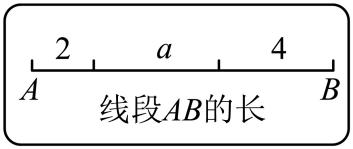
B．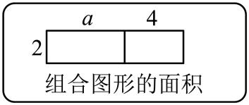
C．
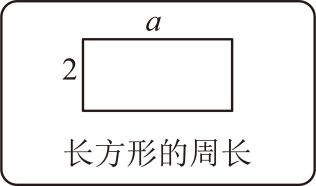
D．
【答案】C
【分析】本题主要考查代数式，根据图形分别列出代数式，逐一判断即可．
【详解】解：A．线段的长为：a+2+4=a+6，不符合题意；
B．组合图形的面积为：a+4×2=2a+8，不符合题意；
C．长方形的周长：a+a+2+2=2a+4，符合题意；
D．圆柱的体积：4a，不符合题意；
故选：C．
4．对于式子“m+n”可以赋予实际意义：一个篮球的价格是m元，一个足球的价格是n元，体育老师购买一个篮球和一个足球共需要付款m+n元，请你对式子“2a”赋予一个实际意义： ．
【答案】答案不唯一，如：一个篮球的价格是a元，购买2个篮球总价是2a元
【分析】本题考查代数式，解题的关键是理解题意．
根据题意解决问题即可．
【详解】解：答案不唯一，如：一个篮球的价格是a元，购买2个篮球总价是2a元．
故答案为：一个篮球的价格是a元，购买2个篮球总价是2a元(答案不唯一)．
【考点26 列代数式】
1．（25-26七年级上·福建宁德·期中）一种商品每件成本a元，原来按成本增加20%定出价格，现在由于库存积压减价，按原价的80%出售，现售价是 元．
【答案】0.96a
【分析】本题考查了列代数式，先根据成本增加20%求出原价，再根据按原价的80%出售求出现售价．
【详解】原价为a×1+20%=1.2a（元）；
现售价为1.2a×80%=1.2a×0.8=0.96a（元）．
故答案为0.96a．
2．（25-26七年级上·陕西西安·期中）2025年暑期某日，陕西历史博物馆珍宝馆的参观人数为x人，基本陈列厅的人数比珍宝馆的3倍少8人，文创区的人数是珍宝馆人数的2倍．那么珍宝馆，基本陈列厅，文创区这三个区域的总人数可表示为（ ）
A．6x−8 B．5x−8 C．5x+8 D．6x+8
【答案】A
【分析】本题考查了列代数式，整式加减运算的应用，解题的关键是理解题意，正确列出代数式．
根据题意，珍宝馆人数为x，基本陈列厅人数为3x−8，文创区人数为2x，根据题意，求解即可．
【详解】解：由题意可得，珍宝馆人数为x，
由基本陈列厅的人数比珍宝馆的3倍少8人可得，基本陈列厅人数为3x−8，
由文创区的人数是珍宝馆人数的2倍可得，文创区人数为2x，
则总人数为x+3x−8+2x=6x−8，
故选： A．
3．（25-26七年级上·黑龙江哈尔滨·期中）两船从同一港口同时出发反向而行，甲船顺水，乙船逆水，两船在静水中的速度都是a千米/时（a>15），水流速度是15千米时，2小时后两船相距 千米．
【答案】4a
【分析】此题考查了列代数式，解决问题的关键是读懂题意，找到所求的量的关系．关系为：顺水的速度=船在静水中的速度+水流速度，逆水速度=船在静水中的速度-水流速度．
根据顺水速度和逆水速度的定义，甲船顺水速度为静水速度加水流速度，乙船逆水速度为静水速度减水流速度，两船反向而行，相距距离为两船行驶距离之和．
【详解】解：甲船顺水速度为a+15千米/时，乙船逆水速度为a−15千米/时，
2小时后，甲船行驶距离为2(a+15)千米，
乙船行驶距离为2(a−15)千米，
两船相距距离为2(a+15)+2(a−15)=2a+30+2a−30=4a（千米）．
故答案为：4a．
4．（25-26七年级上·河南商丘·期中）如图中表示阴影部分面积错误的代数式是（ ）

A．ab+bc B．cb+da−c
C．ad+cb−d D．ab−a−cb−d
【答案】A
【分析】本题考查列代数式，解题的关键是把阴影部分进行分割或补全，从而求出面积．
将所求阴影部分面积分割成两个长方形面积和以及将所求阴影部分图形补成一个完整的长方形，用大长方形面积减去小长方形面积，即可判断各选项．
【详解】解：按照图1方式分割：
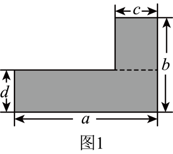
则阴影部分面积为ad+cb−d，故C正确，不符合题意；
按照图2方式分割：
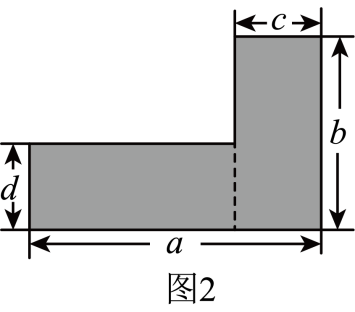
则阴影部分面积为cb+da−c，故B正确，不符合题意；
按照图3方式分割：
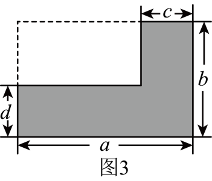
则阴影部分面积为大长方形面积减去空白长方形面积，则阴影部分面积为ab−a−cb−d，故D正确，不符合题意；
而A选项不能表示阴影部分面积，故错误，符合题意．
故选：A．
【考点27 代数式的值】
1．（25-26七年级上·北京海淀·期中）已知x与关于x的代数式ax+b的值对应如下图：

则m的值为 ．
【答案】7
【分析】本题考查代数式的求解，熟练掌握代入法是解题的关键．根据图示中已知的x与关于x的代数式ax+b的值，代入代数式求解出a=−4、b=3，再将x=−1代入ax+b中即可求解．
【详解】当x=0时，ax+b=3，代入可得a×0+b=3，即b=3，
当x=1时，ax+b=−1，代入可得a×1+b=−1，由b=3得a=−4，
∴当x=−1时，ax+b=−a+b=−−4+3=7，
故答案为：7．
2．（25-26七年级上·河南商丘·期中）当x=−2，代数式3x2−2x+1的值为 ．
【答案】17
【分析】本题考查代数式的求值运算，解题的关键是将给定的字母值代入代数式，按照有理数运算规则计算．
将x=−2代入代数式3x2−2x+1，依次计算各项后求和．
【详解】解：当x=−2时，代入代数式3x2−2x+1=3×−22−2×−2+1=12+4+1=17．
故答案为：17．
3．（25-26七年级上·湖南常德·期中）代数式x−2y=1，则代数式2x−4y−2的值为 ．
【答案】0
【分析】本题考查代数式的整体代入求值，解题的关键是将所求代数式变形为含已知式子x−2y的形式，再整体代入计算．
将代数式2x−4y−2变形为含x−2y的形式，再代入x−2y=1计算结果．
【详解】解：2x−4y−2=2x−2y−2，
代入x−2y=1，得2×1−2=2−2=0．
故答案为：0．
4．（25-26七年级上·江苏泰州·期中）在如图所示的运算程序中，若开始输入x的值是2，第1次输出的结果是1，第2次输出的结果是4，…，依次继续下去，第2025次输出的结果是（ ）
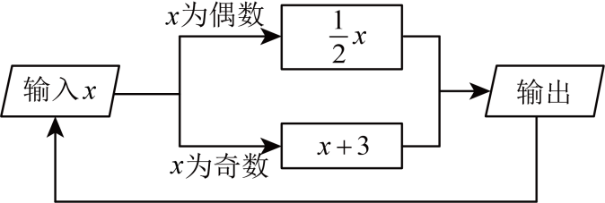
A．1 B．2 C．3 D．4
【答案】B
【分析】本题主要考查了数字类的规律探索，计算出前几次的输出结果可得从第1次输出开始，每3次输出为一个循环，输出的结果依次为1，4，2，据此计算出2025除以3的余数即可得到答案．
【详解】解：第1次输出的结果为1，
第2次输出的结果是4，
第3次输出的结果是12×4=2，
第4次输出的结果是12×2=1，
第5次输出的结果是1+3=4，
第6次输出的结果是12×4=2，
……，
以此类推，可知从第1次输出开始，每3次输出为一个循环，输出的结果依次为1，4，2，
∵2025÷3=675，
∴第2025次输出的结果是2，
故选：B．
【考点28 单项式】
1．下列代数式：①23；②75m；③34xy2；④2x+3y3；⑤abm；⑥6x+3y；⑦xπ；⑧x，其中是单项式的是 ．(填序号)
【答案】①②③⑦⑧
【分析】本题考查单项式的定义，即单项式是由数或字母的积组成的代数式或单独的一个数或字母，熟练掌握其定义是解题的关键．根据单项式的定义，逐一判断各代数式是否符合．
【详解】①23是常数，属于单项式；②75m是数与字母的积，属于单项式；③34xy2是数与字母的积，属于单项式；④2x+3y3含有加法运算，不是单项式；⑤abm分母中含有字母，不是单项式；⑥6x+3y是多项式，不是单项式；⑦xπ分母π是常数，属于单项式；⑧x是单独字母，属于单项式；
故答案为：①②③⑦⑧．
2．（25-26七年级上·浙江杭州·期中）单项式−πa2b3的系数是 ．
【答案】−π3
【分析】此题考查单项式有关概念，根据单项式系数来求解，掌握相关知识是解题的关键．
【详解】解：单项式−πa2b3的系数是−π3，
故答案为：−π3．
3．（25-26七年级上·内蒙古包头·期中）有三个条件：①只含有字时a，b，c，②系数为−2，③次数为4，能满足这三个条件的单项式为 （写出一个即可）．
【答案】−2a2bc、−2ab2c、−2abc2（任选一个即可）
【分析】本题考查了写单项式.
根据单项式的定义作答即可.
【详解】有三个条件：①只含有字时a，b，c，②系数为−2，③次数为4，能满足这三个条件的单项式为−2a2bc、−2ab2c、−2abc2.
故答案为：−2a2bc、−2ab2c、−2abc2（任选一个即可）.
4．（25-26七年级上·云南曲靖·期中）若有一组按一定规律排列的单项式：2y,−2xy2,2x2y3,−2x3y4,2x4y5,−2x5y6,⋯，则第n个单项式是（ ）
A．−2xn−1yn B．2n−1yn C．(−1)n+1⋅2xn−1yn D．(−1)n⋅2xn−1yn
【答案】C
【分析】本题考查单项式，数字规律探索，掌握相关知识是解决问题的关键．通过观察单项式的系数、x的指数和y的指数的变化规律，发现系数正负交替，x的指数从0开始逐项增加1，y的指数从1开始逐项增加1．
【详解】解：∵ 第1个单项式：系数为2，x指数为0，y指数为1；
第2个单项式：系数为−2，x指数为1，y指数为2；
第3个单项式：系数为2，x指数为2，y指数为3；
……
∴ 第n个单项式：系数为 −1n+1⋅2，x指数为n−1，y指数为 n，
即 −1n+1⋅2xn−1yn．
故选：C.
【考点29 多项式】
1．（25-26七年级上·河南周口·期中）多项式−2x2y+xy4+1的次数是 ．
【答案】5
【分析】此题考查了多项式次数的定义，解题的关键是弄清多项式次数是多项式中次数最高的项的次数．多项式次数的定义：多项式的次数是多项式中最高次项的次数，据此即可求解．
【详解】解：多项式 −2x2y+xy4+1次数为 5，
故答案为：5．
2．（25-26七年级上·广西贵港·期中）若x3+m+1x2−3没有二次项，则m的值是 ．
【答案】−1
【分析】本题考查了多项式的项数和次数．因为x3+m+1x2−3没有二次项，则二次项系数为零，据此进行列式计算，即可作答．
【详解】解：∵x3+m+1x2−3没有二次项，
∴m+1=0，
∴m=−1，
故答案为：−1．
3．（25-26七年级上·河南驻马店·期中）将多项式−a3+b2+3a2b−1−3ab2按字母a的升幂排列为 ．
【答案】−1+b2−3ab2+3a2b−a3
【分析】本题考查了多项式的重新排列，我们把一个多项式的各项按照某个字母的指数从大到小或从小到大的顺序排列，称为按这个字母的降幂或升幂排列．
先分清多项式的各项，然后将多项式按字母a升幂排列．
【详解】解：多项式−a3+b2+3a2b−1−3ab2的各项为：−a3、b2、3a2b、−1、−3ab2，
按字母a的升幂排列，即按a的指数从小到大排列：a的指数为0的项有b2和−1，a的指数为1的项有−3ab2，a的指数为2的项有3a2b，a的指数为3的项有−a3，
因此排列为−1+b2−3ab2+3a2b−a3．
故答案为：−1+b2−3ab2+3a2b−a3．
4．（25-26七年级上·江苏泰州·期中）若整式ax3y−2xyb−1+2x3y−3化简后是关于x、y的三次二项式，则ab的值为 ．
【答案】−8
【分析】本题考查的是多项式，难度适中，注意先化简代数式，再求解．
根据三次二项式的定义，整式化简后应为两项，且最高次数为3．通过合并同类项后，令高次项系数为零，并调整另一项的次数至3．
【详解】解：ax3y−2xyb−1+2x3y−3 =a+2x3y−2xyb−1−3．
∴ a+2=0， 1+b−1=3，
解得 a=−2，b=3．
∴ ab=−23=−8．
故答案为 −8．
【考点30 整式】
1．（25-26七年级上·黑龙江哈尔滨·期中）下列式子中：3m+2，a，abc，x−y，8x3−7x2+2，整式有 个．
【答案】4/四
【分析】本题主要考查了整式的定义，熟练掌握单项式和多项式的定义是解题的关键．根据整式的定义，判断所给式子是否为整式，从而确定整式的个数．
【详解】解：3m+2：分母含有字母，是分式，不是整式；
a：单独的一个字母，是单项式，属于整式；
abc：字母的乘积，是单项式，属于整式；
x−y：两个单项式的和，是多项式，属于整式；
8x3−7x2+2：三个单项式的和，是多项式，属于整式；
故答案为：4．
2．（25-26八年级上·云南曲靖·期中）下列式子：①0；②1x；③2x3−8x2+3；④x+1x2+1；⑤6a2b；⑥2x+3y．其中是整式个数的有（ ）
A．2个 B．3个 C．4个 D．5个
【答案】C
【分析】本题考查整式的概念，单项式和多项式统称为整，掌握整式的定义是解题关键．根据定义逐个判断每个式子即可．
【详解】解： ①0是常数，属于整式；
②1x分母含有字母x，不是整式；
③2x3−8x2+3是多项式，是整式；
④x+1x2+1中部分分母含有x，不是整式；
⑤6a2b是单项式，是整式；
⑥2x+3y是多项式，是整式．
∴ 整式有①、③、⑤、⑥，共4个．
故选：C．
3．（25-26七年级上·河南鹤壁·期中）将下列各式的序号填入相应的大括号中：
①2mn，②x2−3y22，③a2+b−1，④−1x+y2，⑤0，⑥−32a，⑦2x3+5，⑧x2y．
单项式：{ …}；
多项式：{ …}；
三次多项式：{ …}；
整式：{ …}．
【答案】见解析
【分析】本题考查了单项式、多项式、三次多项式和整式的定义进行判断；单项式是由数字或字母的积组成的代数式，单独的一个数或字母也是单项式；多项式是几个单项式的和；三次多项式是多项式中最高次项的次数为3；整式是单项式和多项式的统称，据此求解即可．
【详解】解：单项式：{①⑤⑧…}；
多项式：{②③⑦…}；
三次多项式：{⑦…}；
整式：{①②③⑤⑦⑧…}．
4．观察下列各式：−ab，−a2，2a，a+b，a2+a−1．回答下列问题：
(1)单项式分别为：______________________________；
(2)多项式分别为：_________________________________；
(3)整式有___________个；
(4)−ab的系数为__________；
(5)次数最高的多项式为__________________．
【答案】(1)−ab，−a2
(2)a+b，a2+a−1
(3)4
(4)−1
(5)a2+a−1
【分析】根据单项式的定义即可得出（1），根据多项式的定义即可得出（2），根据整式的定义即可得出（3），根据间项式的系数的定义即可得出（4），根据多项式的次数的定义即可得出（5）．
【详解】（1）解：单项式有−ab，−a2；
故答案为：−ab，−a2；
（2）多项式有a+b，a2+a−1；
故答案为：a+b，a2+a−1；
（3）整式有−ab，−a2，a+b，a2+a−1共4个；
故答案为：4；
（4）−ab的系数为−1；
故答案为：−1；
（5）次数最高的多项式为a2+a−1．
故答案为：a2+a−1．
【点睛】本题考查了单项式，整式和多项式的定义，多项式的项和次数等知识点，能熟记单项式和多项式的定义是解此题的关键，注意：表示数与数或数与字母的积，叫单项式，单独一个数或字母也是单项式，两个或两个以上单项式的和，叫多项式，单项式和多项式统称整式，多项式中次数最高的项的次数，叫这个多项式的次数．
【考点31 同类项】
1．（25-26七年级上·湖南长沙·期中）下列式子是ab2的同类项的是（ ）
A．a2b B．−2ab C．−ab2 D．abc
【答案】C
【分析】本题考查同类项的定义，解题的关键是依据“所含字母相同且相同字母的指数也相同”的规则判断同类项．
根据同类项的定义，逐一对比各选项与ab2的字母及对应指数是否一致．
【详解】同类项的定义是：所含字母相同，且相同字母的指数也相同的项．
对于ab2，其所含字母为a,b，对应指数分别为1，2．
A、a2b，字母a的指数为2、b的指数为1，与ab2的指数不一致，不是同类项；
B、−2ab，字母a、b的指数均为1，与ab2的指数不一致，不是同类项；
C、−ab2，所含字母为a、b，对应指数分别为1、2，与ab2的字母和指数均一致，是同类项；
D、abc，多了字母c，所含字母与ab2不同，不是同类项．
故选：C．
2．（25-26七年级上·山东临沂·期中）若单项式5xmy4与12x6y2n是同类项，则m+n= ．
【答案】8
【分析】本题考查同类项的定义，熟练掌握同类项的定义是解题关键．
根据同类项的定义，相同字母的指数必须相等，从而列出方程求解．
【详解】∵单项式 5xmy4 与 12x6y2n 是同类项，
∴ x 的指数相等，即 m=6；y 的指数相等，即 4=2n，解得 n=2，
∴ m+n=6+2=8．
故答案为8．
3．（25-26七年级上·安徽淮南·期中）以下各组中：①2x2y3与x3y2；②−x2yz与−x2y；③10mn与23mn；④−a5与−35；⑤−3x2y与0.5yx2；⑥−125与12．是同类项的是： （填写序号）．
【答案】③⑤⑥
【分析】本题考查了同类项，根据同类项的定义，所含字母相同，并且相同字母的指数也相同的项是同类项；常数项也是同类项．逐一判断每组是否满足定义．
【详解】解：①中字母x和y的指数均不相同，不是同类项；
②中第一个式子含有字母z，第二个不含z，所含字母不相同，不是同类项；
③中字母m和n相同且指数相同，是同类项；
④中第一个式子含有字母a，第二个是常数，不是同类项；
⑤中字母x和y相同且指数相同，是同类项；
⑥中都是常数项，是同类项．
故答案为：③⑤⑥．
4．（24-25七年级上·河北保定·期中）若单项式−12xm+3y与2x4yn+3的差是单项式，那么(m+n)2024的值为（ ）
A．−1 B．0 C．1 D．22024
【答案】C
【分析】本题考查同类项的定义以及通过建立方程求解参数，熟练掌握同类项的定义是解题的关键．
两个单项式是同类项，因此它们的对应字母的指数必须相等，从而可以求出m和n的值，进而计算(m+n)2024的值．
【详解】解：∵单项式−12xm+3y与2x4yn+3的差是单项式，
∴ −12xm+3y与2x4yn+3是同类项，
∴ m+3=4，n+3=1，
解得m=1，n=−2，
∴ (m+n)2024=−2+12024=−12024=1．
故选：C．
【考点32 合并同类项】
1．（25-26七年级上·辽宁大连·期中）下列计算正确的是（ ）
A．x2+x2=x4 B．x2+x3=2x5 C．3x−2x=1 D．x2y−2x2y=−x2y
【答案】D
【分析】本题主要考查了合并同类项的法则，熟练掌握“同类项是指所含字母相同且相同字母的指数也相同的项，合并同类项时系数相加减、字母和字母的指数不变”是解题的关键．
根据合并同类项的法则，逐一判断每个选项的计算是否正确．
【详解】解：x2+x2=2x2≠x4，故A项错误．
x2与x3不是同类项，不能合并，故B项错误．
3x−2x=x≠1，故C项错误．
x2y−2x2y=−x2y，故D项正确．
故选：D．
2．（25-26七年级上·内蒙古包头·期中）若关于a，b的单项式mab2与−2abn的和为0，则nm= ．
【答案】4
【分析】本题考查了同类项的定义；两个单项式的和为0，说明它们是同类项且系数互为相反数．
【详解】解：
单项式mab2与−2abn的和为0，因此它们是同类项．
对于字母a，指数均为1；对于字母b，指数需相等，即2=n，所以n=2．
系数之和为0，即m+−2=0，
解得m=2．
故nm=22=4．
故答案为：4．
3．（25-26七年级上·吉林·月考）当k= 时，多项式x2+k−1xy−5−xy中不含xy项．
【答案】2
【分析】本题考查“多项式的概念”，理解不含某项代表该项的系数为0是解题关键．
不含xy项，说明合并同类项后xy项的系数为0，故k−1−1=0，解出k的值即可．
【详解】解：多项式为 x2+(k−1)xy−5−xy，
合并同类项，xy项的系数为 (k−1)+(−1)=k−2，
令 k−2=0，解得 k=2．
故答案为：2．
【考点33 去括号与添括号】
1．（25-26七年级上·河南平顶山·期中）下列各项中，去括号正确的是（ ）
A．42xy−y2=8xy−4y2 B．−2x−y+2=−2x−y+2
C．−3m+n=−3m−n D．5−a2+3a+1=−5a2+15a
【答案】A
【分析】本题考查去括号法则，关键是注意系数和符号的变化．根据去括号法则，正系数乘括号内各项时符号不变，负系数时各项符号改变．逐一验证各选项即可．
【详解】解：∵ 42xy−y2=4×2xy+4×−y2=8xy−4y2，
∴ A正确；
∵ −2x−y+2=−2x+y−2≠−2x−y+2，
∴ B错误；
∵ −3m+n=−3×m+−3×n=−3m−3n≠−3m−n，
∴ C错误；
∵ 5−a2+3a+1=5×−a2+5×3a+5×1=−5a2+15a+5≠−5a2+15a，
∴ D错误．
故选：A
2．（25-26七年级上·安徽六安·期中）将代数式m−2n−a+b添括号后，正确的是（）
A．m−2n−a+b B．m−2n−a−b
C．m−a−2n+b D．m−b−a−2n
【答案】B
【分析】本题考查了添括号．熟练掌握添括号法则，是解题的关键．添括号时需注意符号变化，括号前是负号则括号内各项变号，括号前是正号则括号内各项不变号．
通过对原式添括号逐一对照各选项，即得．
【详解】解：A、∵m−2n−a+b=m−2n−a−b，∴A不正确；
B、∵m−2n−a+b=m−2n−a−b，∴B正确；
C、∵m−2n−a+b=m−a−2n−b，∴C不正确；
D、∵m−2n−a+b=m+b−a+2n，∴D不正确．
故选：B．
3．已知a−2b=5,c−2d=9，那么a−c−2b−d的值为 ．
【答案】−4
【分析】本题主要考查了代数式求值、去括号、添括号等知识点，将原式变形成a−2b−c−2d是解题的关键．
先运用去括号、添括号将原式变形成a−2b−c−2d，然后将已知等式代入计算即可．
【详解】解：∵a−2b=5,c−2d=9，
∴a−c−2b−d
=a−c−2b+2d
=a−2b−c−2d
=5−9
=−4．
故答案为：−4．
【考点34 整式的加减】
1．（25-26七年级上·四川广元·期中）化简∶
(1)3ab−a2−2ba−3a2；
(2)4y2−3y−3−2y+2y2
(3)12x−2x−13y2+−32x+13y2
【答案】(1)ab−4a2
(2)2y2−5y+3
(3)−3x+y2
【分析】本题主要考查了整式的加减运算（去括号、合并同类项），熟练掌握去括号法则和合并同类项法则是解题的关键．
（1）先找出同类项，再合并同类项即可；
（2）先去括号，再合并同类项即可；
（3）先去括号，再合并同类项即可．
【详解】（1）解：3ab−a2−2ba−3a2
=(3ab−2ba)+(−a2−3a2)
=ab−4a2；
（2）解：4y2−[3y−(3−2y)+2y2]
=4y2−(3y−3+2y+2y2)
=4y2−3y+3−2y−2y2
=(4y2−2y2)+(−3y−2y)+3
=2y2−5y+3；
（3）解：12x−2x−13y2+−32x+13y2
=12x−2x+23y2−32x+13y2
=12x−2x−32x+23y2+13y2
=−3x+y2．
2．（25-26七年级上·天津·月考）下面是小芳做的一道运算题，但她不小心把一滴墨水滴在了上面：
−x2+5xy−12y2−−12x2+4xy−32y2=−12x2+y2，阴影部分即为墨迹，那么被墨水遮住的一项应是（ ）
A．+xy B．−xy C．+9xy D．−7xy
【答案】A
【分析】本题主要考查了整式的加减计算，根据整式的加减计算法则求出−x2+5xy−12y2−−12x2+4xy−32y2的结果即可得到答案．
【详解】解：−x2+5xy−12y2−−12x2+4xy−32y2
=−x2+5xy−12y2+12x2−4xy+32y2
=−12x2+xy+y2
∴被墨水遮住的一项应是+xy，
故选：A．
3．（25-26七年级上·江苏泰州·期中）已知关于m的多项式：3am2+5abm−b与3bm2−5abm+2a的和是一个单项式（a，b为非零常数），那么ab=
【答案】−1或12
【分析】本题考查整式的加减运算，两个多项式的和合并同类项后，得到3a+3bm2+2a−b．根据和为单项式，分两种情况讨论即可．
【详解】解：3am2+5abm−b+3bm2−5abm+2a=3a+3bm2+2a−b；
∵和为单项式，
∴①3a+3b=0，即a=−b，此时ab=−bb=−1；
②2a−b=0，则2a=b，此时ab=a2a=12；
故答案为：−1或12．
【考点35 整式的加减—化简求值】
1．（25-26七年级上·北京西城·期中）先化简，再求值：
(1)已知：a2−2a−1=0，求4a2+a−5−3a+a2的值．
(2)已知：m+32+n−12=0，求6m2n−m2−2mn2−3m2n+4mn2的值．
【答案】(1)a2−2a−5，−4
(2)−m2−2mn2，−152
【分析】本题主要考查了整式加减中的化简求值，绝对值的非负性，解题的关键是熟练掌握整式的加减运算法则．
（1）先去括号，再进行整式加减计算，然后利用整体的思想代入求解即可；
（2）先根据绝对值和平方的非负性求出m,n，再利用整式的加减运算法则化简，然后代入计算即可．
【详解】（1）解：4a2+a−5−3a+a2
=4a2+a−5−3a−3a2
=a2−2a−5，
∵a2−2a−1=0
∴a2−2a=1，
∴原式=1−5=−4；
（2）解：m+32+n−12=0，m+32≥0,n−12≥0，
∴m+3=0,n−12=0，
∴m=−3,n=12，
6m2n−m2−2mn2−3m2n+4mn2
=6m2n−m2−2mn2+6m2n+4mn2
=6m2n−m2+2mn2−6m2n−4mn2
=−m2−2mn2
=−−32−2×−3×122
=−9+32
=−152
2．（25-26七年级上·四川成都·期中）已知A=3x−2xy+7y,B=y+2xy−3x．
(1)当x=−1,y=2，求A−B的值；
(2)若A−B的值与y的取值无关，求A−B的值．
【答案】(1)14
(2)9
【分析】本题考查的是整式的加减运算，代数式的值与某字母的值无关的含义；
（1）利用整式加减运算法则先化简，再整体代入求值；
（2）将A−B变形为6x+y4x−6，再根据条件可得4x−6=0，即可求解．
【详解】（1）解：A−B
=3x−2xy+7y−y+2xy−3x
=3x−2xy+7y−y−2xy+3x
=6x−4xy+6y
∵x=−1,y=2，
∴A−B=6×(−1)−4×−1×2+6×2=14；
（2）解：A−B=6x−4xy+6y=6x+y4x−6，
∵A−B的值与y的取值无关，
∴4x−6=0，
解得：x=32，
∴A−B=6x−4xy+6y=6×32+0=9．
3．（25-26七年级上·湖北襄阳·期中）若多项式2x3−8x2+mx−10与多项式x3+3m+7x2−5x−7的差不含x的二次项，则m3的值为 ．
【答案】−125
【分析】本题主要考查了整式加减中的无关型问题，代数式求值，根据整式的加减计算法则求出两个多项式的差，再根据差中不含x的二次项，得到含x的二次项的系数为0，据此求解即可．
【详解】解：2x3−8x2+mx−10−x3+3m+7x2−5x−7
=2x3−8x2+mx−10−x3−3m+7x2+5x+7
=x3−3m+15x2+m+5x−3，
∵多项式2x3−8x2+mx−10与多项式x3+3m+7x2−5x−7的差不含x的二次项，
∴−3m+15=0，
∴m=−5，
∴m3=−53=−125，
故答案为：−125．
【考点36 整式加减的应用】
1．（25-26七年级上·安徽淮南·期中）如图所示，将边长分别为x，y，z的正方形放置在长x+y，宽x+z的长方形中．已知x>y>z，则阴影部分的周长为（ ）

A．4x+2z B．2x+4y C．2x+2y+z D．4x+y+z
【答案】A
【分析】本题主要考查了整式的加减运算，解题的关键是通过平移的方式进行边长转化．
通过平移的方式将阴影部分的周长转化为长方形ABCD的周长求解即可．
【详解】解：如图，
则阴影部分的周长=长方形ABCD的周长= 2x+y+2x+z−y=2x+2y+2x+2z−2y=4x+2z．
故选：A．
2．（25-26七年级上·江苏淮安·期中）一个两位数的十位上的数字为a，个位上的数字为b，这个两位数记作ab；一个三位数的百位上的数字为x，十位上的数字为y，个位上的数字为z，这个三位数记作xyz．
问题：ab+ba能被11整除吗？请说明理由；
小明发现：能被11整除，理由为：
∵ab+ba=10a+b+10b+a=11a+b，
∴ab+ba能被11整除．
请根据小明的思路解决以下问题
(1)ab−ba_______（填能或不能）被9整除；
(2)证明：对于三位数xyz，如果x+y+z能被3整除，那么xyz就能被3整除．
【答案】(1)能
(2)证明见详解
【分析】本题考查了整式的加减，新定义，熟练掌握因式分解的方法是解题的关键．
（1）根据给定的运算可表示出ab−ba=9a+b，即可求解．
（2）根据xyz=911x+y+x+y+z，结合已知条件即可证得．
【详解】（1）解：根据题意可得：ab−ba=10a+b−10b+a=10a+b−10b−a=9a+b，
∴ab−ba能被9整除，
故答案为：能．
（2）证明：∵xyz=100x+10y+z=99x+9y+x+y+z=911x+y+x+y+z，
∵911x+y能被3整除，x+y+z能被3整除（已知），
∴xyz能被3整除．
3．（25-26七年级上·江苏连云港·期中）运动会期间，各班都如火如荼地准备着入场式，七年级8班计划购买若干裙子和帽子作为演出服装，经调查发现网上某店铺每条裙子卖90元，每顶帽子卖12元，给出的优惠方案如下：方案一，以原价购买，购买一条裙子赠送两顶帽子；方案二，总价打8折．若该班级计划购买a条裙子和b顶帽子（b≥2a）．
(1)请用含a、b的代数式分别表示出两种方案的实际费用；
(2)当a=10，b=54时，哪种方案更便宜呢？请通过计算说明；
(3)当a=12时，两种方案的费用相同，请求出此时b的值．
【答案】(1)方案一：66a+12b（元），方案二：72a+9.6b（元）
(2)方案二便宜
(3)b=30时，两种方案的费用相同
【分析】本题考查列代数式、代数式求值、整式的加减应用，理解题意，正确列出代数式是解答的关键．
（1）根据两种优惠方案结合实际费用等于数量×单价列出代数式即可；
（2）将a、b值分别代入（1）中代数式中求解，进而比较大小做出判断即可；
（3）将a代入（1）中得到关于b的代数式，得到关于b的方程，解方程求出结论．
【详解】（1）解：根据题意得：
方案一：90a+12b−2a=90a+12b−24a=66a+12b（元），
方案二：0.890a+12b=72a+9.6b（元）；
（2）解：当a=10，b=54时，
方案一：66a+12b=66×10+12×54=660+648=1308（元），
方案二：72a+9.6b=72×10+9.6×54=1238.4（元），
∵1308>1238.4，
∴方案二便宜；
（3）解：当a=12时，方案一：792+12b（元），方案二：864+9.6b（元），
∵当a=12时，两种方案的费用相同，
∴864+9.6b=792+12b，
解得：b=30，
∴b=30时，两种方案的费用相同.
【考点37 直线、射线、线段】
1．（25-26七年级上·河南郑州·期中）如图，点A、B、C是直线l上的三个点，则图中共有线段、射线条数分别是（ ）
A．2，3 B．3，3 C．3，6 D．2，6
【答案】C
【分析】本题考查了直线、线段、射线的数量问题，理解题意，结合图中信息，以及线段和射线定义进行分析，即可作答．
【详解】解：依题意，观察图中，
则有线段AB，线段AC，线段BC，射线AB，射线BA，射线AC，射线CA，射线BC，射线BC，
∴图中共有线段、射线条数分别是3，6
故选：C
2．（25-26七年级上·河南周口·期中）下列说法正确的是（ ）
A．射线AB和射线BA是同一条射线 B．两点之间，直线最短
C．两点确定一条直线 D．若AB=BC，则点B是AC的中点
【答案】C
【分析】本题考查直线、射线、线段的基本性质，包括射线的定义、两点之间距离的性质、直线公理和线段中点的条件．
【详解】解：射线AB以A为端点向B方向延伸，射线BA以B为端点向A方向延伸， 端点不同，方向相反，不是同一条射线．故A错误．
两点之间，所有连线中线段最短，直线是无限延伸的，不可比较长短，故B错误．
经过两点有且只有一条直线，这是直线公理，故 C正确．
当A、B、C三点不共线时，AB=BC但B不是AC的中点，故 D错误．
故选：C．
3．按要求完成作图及作答：

(1)如图1，平面上有四个点A，B，C，D，作射线BC；
(2)如图1，取一点P，使点P既在直线AB上又在直线CD上；
(3)如图1，若点M到A，B，C，D四点距离之和最短．画出点M的位置；
(4)如图2，平面内三条直线交于E、F、G三点，点M、N是平面内另外两点，若分别过点M、N各作一条直线，则新增的两条直线使得平面内最多新增__________个交点．
【答案】(1)见解析
(2)见解析
(3)见解析
(4)7
【分析】本题考查了作图-应用与设计作图，直线的性质：两点之间，线段最短，相交线，解决本题的关键是掌握直线的性质．
（1）按要求作射线即可．
（2）根据题干的条件点P既在直线AB上又在直线CD上，所以点P是直线AB与直线CD的交点．
（3）本题考查“两点之间，线段最短”，结合图形理解概念即可解题．
（4）本题考查两直线相交，有且只有一个交点，结合图形和题干的条件分析，即可解题
【详解】（1）
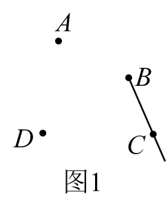
（2）
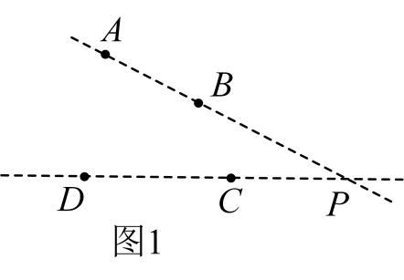
（3）
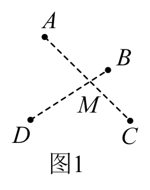
（4）解：平面内有3条直线，过点M作的直线，最多与这3条直线都有交点，则增加3个交点，过点N作的直线，最多与平面内现有的4条直线都有交点，则增加4个交点，综上所述，最多可增加7个交点．
故答案为：7．
【考点38 两点确定一条直线】
1．（24-25六年级下·山东烟台·期末）小明在设计黑板报时，想在黑板上画一条笔直的参照线，由于尺子不够长，他想出了如下办法：①在一根长度合适的毛线上涂满粉笔末；②由两个同学分别按住毛线的两端，并绷紧；③捏起毛线后松开，便可在黑板上弹出一条笔直的参照线．上述“画参照线”方法的依据是 ．
【答案】两点确定一条直线
【分析】本题主要考查了直线的性质：两点确定一条直线，正确把握直线的性质是解题关键．直接利用直线的性质分析得出答案．
【详解】解：上述“画参照线”方法的依据是：两点确定一条直线．
故答案为：两点确定一条直线．
2．在墙壁上固定一根横放的木条，至少需要钉子的枚数是（ ）
A．1 B．2 C．3 D．无法确定
【答案】B
【分析】本题考查了直线的知识；根据两点确定一条直线即可得到答案．
【详解】解：在墙壁上固定一根横放的木条，则至少需要钉子的枚数是2枚，
故选：B．
3．（24-25七年级上·浙江台州·期末）如图，跳高比赛时，只需两个支点就能固定横杆，这种做法依据的数学基本事实是 ．

【答案】两点确定一条直线
【分析】本题考查的是直线的性质，即两点确定一条直线．熟练掌握性质是解题的关键；
根据公理“两点确定一条直线”来解答即可．
【详解】解：因为“两点确定一条直线”，所以跳高比赛时，只需两个支点就能固定横杆．
故答案为：两点确定一条直线．
【考点39 尺规作线段】
1．如图，线段a，b请按下列语句作出图形：（不写作法，保留作图痕迹）

(1)作射线AM；
(2)请用尺规在射线AM上依次截取线段AB，BC，使得AB=a，BC=b
【答案】(1)见解析
(2)见解析
【分析】（1）根据射线定义即可画射线AM；
（2）以点A为圆心，a为半径画弧即可在射线AM上截取AB=a，再以点B为圆心，b为半径画弧即可在射线BM上截取BC=b，
本题考查尺规作图，画线段，射线，掌握线段与射线的定义，会用尺规作图的步骤与要求作图是解题关键．
【详解】（1）解：射线AM，如图所示：
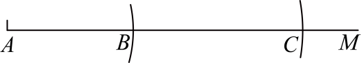
（2）解：线段AB，BC，如图所示：
2．（24-25七年级上·福建泉州·期末）如图，已知线段a,b，作一条线段使它等于2a−b．作法：①作射线AM；②用圆规量出线段a的长，在射线AM上顺次截取AB=a,BC=a；③用圆规量出线段b的长，在线段AC上截取CD=b，那么所作的线段是（ ）

A．AD B．BD C．CD D．AC
【答案】A
【分析】本题考查了作线段、线段的和差，熟练掌握作线段的方法是解题关键．根据线段的和差可得AD=AB+BC−CD=2a−b，由此即可得．
【详解】解：∵AB=a,BC=a，CD=b，
∴AD=AB+BC−CD=a+a−b=2a−b，
∴所作的线段是AD，
故选：A．
3．（24-25七年级上·陕西西安·月考）如图，AB=12，点C、D分别是线段AB上两点（CD>AC，CD>BD），用圆规在线段CD上分别截取CE=AC，DF=BD，若点E与点F恰好重合，则CD的长度为 ．
【答案】6
【分析】本题考查两点间的距离，根据题意得CE=AC，CD=CE+DF，AB=AE+BF，即可得出结论．理解作图过程及点E与点F重合是解题的关键．
【详解】解：∵CE=AC，DF=BD，
∴CE=12AE，DF=12BF，
∵AB=12，点E与点F恰好重合，
∴CE+DF=CD，AE+BF=AB=12，
∴CD=CE+DF
=12AE+12BF
=12AE+BF
=12×12
=6，
∴CD的长度为6．
故答案为：6．
【考点40 两点之间线段最短】
1．（24-25七年级上·湖南株洲·期末）如图示，从A地去往C地有4条路线，景元同学发现路线③最快，能正确解释这一现象的数学知识是（ ）

A．经过一点有无数条直线
B．两点之间，线段最短
C．两点确定一条直线
D．两点之间线段的长度，叫做两点之间的距离
【答案】B
【分析】本题考查了线段的性质：两点之间线段最短，掌握这个性质是关键．
根据线段的性质：两点之间线段最短，即可解答．
【详解】解：从A地去往C地有4条路线，景元同学发现路线③最快，能正确解释这一现象的数学知识是：两点之间，线段最短；
故选：B．
2．（24-25七年级上·广东珠海·期末）下列三种现象中，可以用“两点之间，线段最短”来解释的现象是 (填序号)．

【答案】②
【分析】本题主要考查了线段的性质，分别判断三种现象，确定用“两点之间，线段最短”来解释的现象即可．
【详解】解：①跳远测量反映的是“垂线段最短”；
②投铅球测量反映的是“两点之间，线段最短”；
③木条固定反映的是“两点确定一条直线”；
所以，可以用“两点之间，线段最短”来解释的现象是②，
故答案为：②．
3．（24-25七年级上·北京昌平·期末）昌平区南邵镇张各庄村的银杏林是北京面积最大的银杏林，这里有超过80万株的银杏树．小林同学在游玩时收集了一些银杏落叶用来制作手工，如图，她用剪刀沿直线将一片平整的银杏叶剪掉一部分，发现剩下的银杏叶的周长比原银杏叶周长要小，理由是 ．

【答案】两点之间线段最短
【分析】本题考查线段的性质：两点之间，线段最短，由线段的性质：两点之间，线段最短，即可得到答案．
【详解】解：她用剪刀沿直线将一片平整的银杏叶剪掉一部分，发现剩下的银杏叶的周长比原银杏叶周长要小，理由是：两点之间，线段最短．
故答案为：两点之间，线段最短．
【考点41 两点间的距离】
1．（24-25七年级下·内蒙古乌海·期末）若点A，B，C在同一条直线上，如果线段AB=7cm，线段BC=4cm，那么A，C两点之间距离是 ．
【答案】3cm或11cm
【分析】本题考查两点间距离，分析两种情况求解：点C可能在线段AB上，也可能在线段AB的延长线上，进而即可求解．根据题意画出图形是解题的关键，同时渗透了分类讨论的数学思想．
【详解】解：若点C在线段AB上，如图，

∵AB=7cm，BC=4cm，
∴AC=AB−BC=7−4=3cm；
若点C在线段AB的延长线上，如图，

∵AB=7cm，BC=4cm，
∴AC=AB+BC=7+4=11cm，
综上所述，A，C两点之间距离是3cm或11cm．
故答案为：3cm或11cm．
2．（24-25七年级上·福建泉州·期末）如图，数学课上，刘老师用圆规在直线l上依次作线段AB=a，BC=a，CD=b，那么这样作图得到的线段AD的长是（ ）

A．a+2b B．2a+b C．b−2a D．2a−b
【答案】D
【分析】本题考查了两点间的距离，正确的识别图形是解题的关键．
根据线段的和差即可得到结论．
【详解】解：∵AB=a， BC=a， CD=b，
∴AD=AB+BC−CD=2a−b，
故选：D．
3．（24-25七年级上·福建福州·期末）已知线段AD=22，点B,C在线段AD上，BC:CD=3:1,M是AB的中点，N是CD的中点．
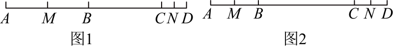
(1)如图1，若AB=10，求MN的长度．
(2)如图2，若MC−NB=1，求MC的长度．
【答案】(1)1512
(2)15
【分析】本题考查了两点间距离、线段中点、一元一次方程的应用等知识点，根据题目的已知条件并结合图形分析是解题的关键．
（1）由中点的定义可得AM=12AB=5，进而得到BD=12，再根据比例可得CD=3，然后再根据中点的定义以及线段的和差即可解答；
（2）设CD=x，则BC=3x，易得AB=22−4x，根据中点的定义可得MB=11−2x、CN=12x，进而得到MB−CN=1，据此列一元一次方程可得x=4，可得BC=12，MB=3，最后根据线段的和差即可解答．
【详解】（1）解：∵AB=10，点M是AB的中点，
∴AM=12AB=5，
∴BD=AD−AB=22−10=12，
∵BC:CD=3:1，
∴CD=14BD=14×12=3，
∵点N是CD中点，
∴DN=12CD=32，
∴MN=AD−AM−DN=22−5−32=1512．
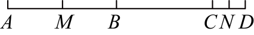
（2）解：设CD=x，则BC=3x，
∵AD=22，
∴AB=AD−BC−CD=22−3x−x=22−4x，
∵点M是AB中点，
∴MB=12AB=1222−4x=11−2x，
∵点N是CD中点，
∴CN=12CD=12x，
∵MC−NB=1，
∴MB+BC−BC+CN=1，
∴MB−CN=1，即11−2x−12x=1，解得：x=4，
∴BC=3x=12，MB=11−2x=3，
∴MC=MB+BC=12+3=15．
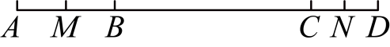
【考点42 线段的和差】
1．（25-26七年级上·四川成都·期中）已知点C在线段AB上，AC=2BC，线段DE在线段AB上移动，且点D在点E的左侧．

(1)若AB=18，DE=8．
①如图1，当E为BC中点时，求AD的长；
②点F（异于A，B，C点）在线段AB上，AF=3AD，CE+EF=3，求AD的长；
(2)若AB=2DE，且满足关系式AD+EC=2BE，求CDAB的值．
【答案】(1)）①AD=7；②AD的长为3或5；
(2)38
【分析】本题主要考查线段中点的性质及和差关系，熟练掌握线段中点的性质及和差关系是解题的关键．
（1）①由题意易得BC=6，AC=12，CE=BE=12BC=3，然后问题可求解；
②由题意可分当点E在点F的左侧时和当点E在点F的右侧时，然后根据线段的和差关系进行求解即可；
（2）设CE=x，DC=y，则DE=x+y，则有AD=AC−DC=43x+13y，BC=13AB=23x+y，然后可得AD+CE=73x+13y， 再由AD+EC=2BE求出x,y之间的数量关系，即可求解．
【详解】（1）∵AC=2BC，AB=18,DE=8，
∴BC=6，AC=12，
①∵点E为BC的中点，
∴CE=BE=12BC=3，
∴AE=AC+CE=15，
∴AD=AE−DE=7；
②由题意可得：
当点E在点F的左侧时，如图所示：
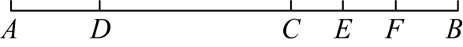
∵CE+EF=3，BC=6，
∴点F是BC的中点，
∴CF=BF=3，
∴AF=AB−BF=15，
∵AF=3AD，
∴AD=5；
当点E在点F的右侧时，如图所示：
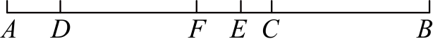
∵AC=12，CE+EF=CF=3，
∴AF=AC−CF=9，
∵AF=3AD，
∴AD=3；
综上所述：AD的长为3或5；
（2）∵AC=2BC，AB=2DE，且满足关系式AD+EC=2BE，
如图所示：
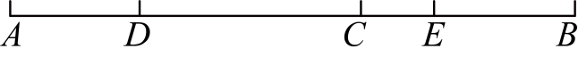
设CE=x，DC=y，则DE=x+y，
∴AB=2x+y，AC=23AB=43x+y，
∴AD=AC−DC=43x+13y，BC=13AB=23x+y，
∴BE=BC−CE=23y−13x，
∴AD+CE=73x+13y，
∵AD+EC=2BE，
∴73x+13y=223y−13x
解得：3x=y，
∴CDAB=y2x+y=3x2x+3x=38．
2．（25-26七年级上·河北石家庄·期中）定义新概念：如图1，点P在线段AB上，图中共有3条线段AP，PB和AB，若有一条线段的长度是另一条线段长度的3倍，则称点P是线段AB的“巧点”，如图2，若AB=20cm，点P是的AB的“巧点”，则AP= cm．
【答案】203或403或15或5
【分析】本题考查了线段的概念，把握“巧分点”的定义，分类讨论是解题的关键；根据“巧分点”的定义分类讨论即可得到答案.
【详解】解：∵点P在线段AB上，根据题意
当AB=3AP时；则AP=203；
当AB=3BP时；则AP=AB−BP=20−203=403 ；
当AP=3BP时；则AB=AP+BP=4BP，所以BP=204=5，即AP=AB−BP=20−5=15；
当BP=3AP时；则AB=AP+BP=4AP，所以AP=204=5；
故答案为：203或403或15或5.
3．（25-26七年级上·福建厦门·期中）在数轴上剪下长度为16（从−2到14）的一条线段，并把这条线段沿某点折叠，然后在重叠部分某处剪一刀得到三条线段（如图）．若这三条线段的长度之比为2:1:1，则折痕处对应的点所表示的数是 ．

【答案】4或6或8
【分析】本题主要考查了数轴上的折叠问题，线段的和与差，有理数的加法计算，分图1，图2和图3三种情况，求出AC，CD的长，再求出CE的长，进而求出AE的长即可得到答案．
【详解】解：∵原来线段的长度为16，且剪断后的三条线段的长度之比为2:1:1，
∴剪断后的三条线段的长度分别为8，4，4，
如图1所示，当AC：CD:BD=1:1:2时，则CE=12CD=2，
∴AE=AC+CE=6，
∴点E表示的数为−2+6=4；
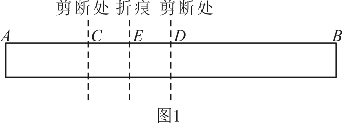
如图2所示，当AC：CD:BD=1:2:1时，则CE=12CD=4，
∴AE=AC+CE=8，
∴点E表示的数为−2+8=6；
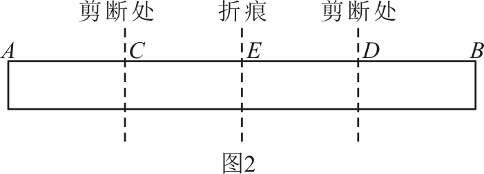
如图3所示，当AC：CD:BD=2:1:1时，则CE=12CD=2，
∴AE=AC+CE=10，
∴点E表示的数为−2+10=8；
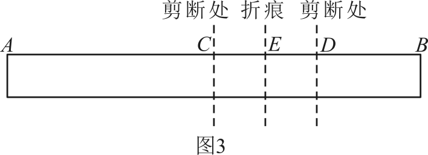
综上所述，折痕处对应的点所表示的数是4或6或8，
故答案为：4或6或8．
【考点43 比较线段的长短】
1．（24-25七年级上·山西朔州·期末）如图，用圆规比较线段的长短，圆规的两个支腿的夹角不变，其中下列线段比PQ长的是（ ）
B．
C． D．
【答案】C
【分析】本题考查比较线段的长短，直接根据图形比较长短即可．
【详解】解：A、线段比PQ短，不符合题意；
B、线段与PQ一样长，不符合题意；
C、线段比PQ长，符合题意；
D、线段比PQ短，不符合题意；
故选C．
2．（24-25六年级上·上海·月考）用叠合法比较线段AB和线段CD的大小，将线段AB移到线段CD的位置，使端点A与端点C重合，线段AB和线段CD叠合，则若点B ，则AB>CD．
【答案】在线段CD延长线上
【分析】本题考查了线段大小的比较的方法，熟练掌握叠合法比较线段的大小的前提条件和三种情况是解答的关键．
画出图形，根据叠合法比较线段的方法即可求解．
【详解】解：用叠合法比较线段AB和线段CD的大小，将线段AB移到线段CD的位置，使端点A与端点C重合，线段AB和线段CD叠合，则若点B在线段CD延长线上，则AB>CD，
如图：

故答案为：在线段CD延长线上．
3．（24-25七年级上·河北承德·期末）一个点在有公共端点的两条线段组成的一条折线上，且把这条折线分成长度相等的两部分，这个点叫作这条折线的“折中点”．如图所示，如果点D是折线A−C−B的“折中点”，请解答以下问题：
(1)当AC>BC时，点D在线段_____上；
(2)当点D与C重合时，直接比较AC，BC的大小．
(3)若E为线段AC的中点，EC=4，CD=3，求BC的长度．
【答案】(1)AC
(2)AC=BC
(3)BC的长度为2或14
【分析】本题考查了线段的加减，理解新定义“折中点”并画出图形是解题关键．
（1）由“折中点”的定义判断即可；
（2）由“折中点”的定义得出AC=BC即可；
（3）分两种情况：点D在AC上，点D在BC上，由“折中点”的定义，列式计算即可．
【详解】（1）解：当AC>BC时，AC+BC2<AC，
由“折中点”的定义可知点D在线段AC上；
（2）解：当点D与点C重合时，根据“折中点”的定义可知AC=BC；
（3）解：∵E为线段AC的中点，EC=4，
∴AC=2EC=8，
当点D在AC上时，如图所示：
∵CD=3，
∴AD=AC−CD=8−3=5，
∴BC=BC+CD−CD=AD−CD=5−3=2；
当点D在BC上时，如图所示：

∵CD=3，
∴BD=AC+CD=8+3=11，
∴BC=BD+CD=11+3=14；
综上分析可知：BC的长度为2或14．
【考点44 角的概念】
1．（25-26七年级上·河北唐山·期中）如图，在∠AOC内部作了一条射线OB，下列说法正确的是（ ）
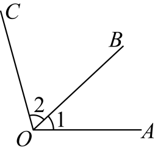
A．∠AOC可以用∠O表示 B．∠1=∠2
C．∠2与∠COB是同一个角 D．∠AOC=∠1+∠AOB
【答案】C
【分析】本题主要考查几何图形初步中“角”的相关知识，解题的关键在于准确理解图形中每个角的定义和范围，根据知识点，结合图形，对每个选项进行逐一分析．
【详解】选项A、∠AOC不可以用∠O表示，当点O为顶点的角不止一个时，这种表示会引起歧义，A选项错误，不符合题意；
选项B、从图中可直观看出，射线OB更靠近射线OA，因此∠1明显小于∠2，B选项错误，不符合题意；
选项C、根据角的表示法，∠2与∠COB都指的是由射线OB和OC组成的同一个角，C选项正确，符合题意；
选项D、根据图形，∠AOC=∠1+∠2，D选项错误，不符合题意；
故选C．
2．在综合与实践课上，将∠A与∠B两个角的关系记为∠A=n∠Bn>0，探索n的大小与两个角的类型之间的关系（ ）
A．当n=2时，若∠A为锐角，则∠B为锐角
B．当n=2时，若∠A为钝角，则∠B为钝角
C．当n=12时，若∠A为锐角，则∠B为锐角
D．当n=12时，若∠A为锐角，则∠B为钝角
【答案】A
【分析】本题考查了角的倍分关系及锐角、钝角定义，根据角的分类及倍分关系逐项判断即可．
【详解】解：A、当n=2时，若∠A为锐角，则∠B为锐角，正确，故本选项符合题意；
B、当n=2时，若∠A为钝角，则∠B为锐角，原说法错误，故本选项不符合题意；
C、当n=12时，若∠A为锐角，则∠B为锐角或钝角，原说法错误，故本选项不符合题意；
D、当n=12时，若∠A为锐角，则∠B为钝角或锐角，原说法错误，故本选项不符合题意；
故选：A．
3．如图，AOE是一条直线，图中的角共有（ ）

A．4个 B．8个 C．9个 D．10个
【答案】D
【分析】本题考查对角的定义的理解，数角时注意从一边数，做到不重不漏即可．
【详解】解：图中的角有∠AOB，∠AOC，∠AOD，∠BOC，∠BOD，∠BOE，∠COD，∠COE，∠DOE，∠AOE，共10个，
故选：D．
【考点45 钟面角】
1．（24-25九年级上·广东肇庆·期末）时钟上的分针旋转一周需要60min，则经过15min，分针旋转了（ ）
A．30° B．60° C．90° D．120°
【答案】C
【分析】本题考查了生活中的旋转现象，明确分针旋转一周为360°是解题的关键．
先求出分针每分钟旋转6°，再求得经过15min，分针旋转的度数即可．
【详解】解：根据题意知，分针旋转一周360°需要60min，则分针每分钟旋转6°，
∴经过15min，分针旋转了15×6=90°．
故选C．
2．（24-25七年级上·福建泉州·期末）昨天晚上，当挂钟报时6点整时，小丽开始做数学作业，当她完成数学作业时，挂钟里时针和分针恰好第一次互相垂直，则小丽做数学作业用了 分钟．
【答案】18011
【分析】本题考查钟面角，一元一次方程的实际应用，根据分针一分钟走6度，时针一分钟走0.5度，以及时针和分针恰好第一次互相垂直时，分针比时针多走90度，列出方程求解即可．
【详解】解：设小丽做数学作业用了x分钟，由题意，得：
6x−0.5x=90，
解得：x=18011；
故答案为：18011．
3．（24-25七年级上·江苏盐城·期末）【问题提出】
（1）如图1，数轴上点A表示的数为a，点B表示的数为b，已知xa+by12与x4yb是同类项，点C是线段AB的中点．
①a=________，点C表示的数是________；
②若点P从点A出发，以每秒5个单位长度的速度沿数轴向左运动，同时，点Q从点C出发，以每秒7个单位长度的速度也沿数轴向左运动，几秒后，P、Q两点之间的距离为2？
【方法迁移】
（2）如图2，∠DOE=120°，OF平分∠DOE．现有射线ON从OF出发，以每秒15°的速度绕点O顺时针旋转，同时，射线OM从OD出发，以每秒20°的速度也绕点O顺时针旋转，当OM旋转一周时，这两条射线同时停止旋转．问经过几秒后，射线OM、ON所成的角为25°？
【拓展运用】
（3）一天早上，小明看到家里闹钟钟面显示7点整（如图3，时针指向7，分针指向12），此时请直接写出经过多少分钟后，该闹钟的分针与时针所成的角首次变成30°．
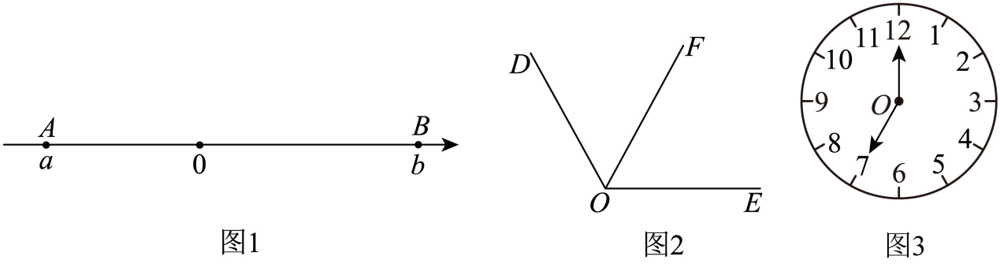
【答案】（1）①−8，2；②4秒或6秒；（2）7秒或17秒；（3）36011分钟
【分析】（1）①由xa+by12与x4yb是同类项，可得a+b=4，b=12，知a=−8，点C是线段AB的中点，即得c；
②设P，Q运动t秒，则P表示的数为−8−5t，Q表示的数为2−7t，得−8−5t−2−7t=2，解方程可得答案；
（2）求出∠DOF=12∠DOE=60°，经过m秒后，射线OM、ON的夹角为25°，可得：20m=60+15m−25或20m=60+15m+25，解方程即可；
（3）设经过x分钟后，该闹钟的分针与时针所成的角首次变成30°，根据1分钟时针旋转0.5°，分针旋转6°，7点整时，时针分针夹角为210°，有0.5x+210=6x+30，即可解得答案．
【详解】(1) ①∵xa+by12与x4yb是同类项，
∴a+b=4，b=12，
∴a=−8，
∵点C是线段AB的中点，
∴c=−8+122=2，
故答案为：−8；2；
②设P，Q运动t秒，则P表示的数为−8−5t，Q表示的数为2−7t，
∵P、Q两点之间的距离为2，
∴−8−5t−2−7t=2，
即−10+2t=−2或−10+2t=2，
解得：t=4或t=6，
答：经过4秒或6秒后，P、Q两点之间的距离为2；
（2）∵∠DOE=120°，OF平分∠DOE，
∴∠DOF=12∠DOE=60°，
设经过m秒后，射线OM、ON的夹角为25°，
由题意得：20m=60+15m−25或
20m=60+15m+25，
解得：m=7或m=17
由OM旋转一周时，这两条射线同时停止旋转，可得20m≤360，
∴m≤18，
∴经过7秒或17秒后，射线OM、ON所成的角为25°；
（3）设经过x分钟后，该闹钟的分针与时针所成的角首次变成30°，
∵1分钟时针旋转0.5°，分针旋转6°，7点整时，时针分针夹角为210°，
∴0.5x+210=6x+30，
解得x=36011，
∴经过36011分钟后，该闹钟的分针与时针所成的角首次变成30°.
【点睛】本题考查了同类项，解一元一次方程，角平分线的定义，线段中点定义，绝对值的意义等知识，解决问题的关键是熟练掌握有关基础知识.
【考点46 方向角】
1．（25-26九年级上·河北邢台·期中）如图，已知从点A看点B，仰角为22°，嘉淇做一个数学游戏，把由仰角描述换成用方向角来描述，则点A位于点B的（ ）
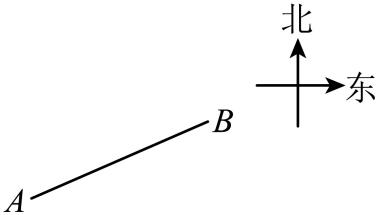
A．南偏西68°方向上 B．南偏西22°方向上
C．北偏东22°方向上 D．北偏东68°方向上
【答案】A
【分析】本题考查了仰角与方向角；过B作水平方向射线BC，垂直方向射线BD，则∠DBC=90°，∠ABC=22°；由此可求得∠ABD，从而可确定点A位于点B的方向．
【详解】解：过B作水平方向射线BC，垂直方向射线BD，则∠DBC=90°，∠ABC=22°；
则∠ABD=90°−∠ABC=68°，
∴点A位于点B的方向为南偏西68°方向上．
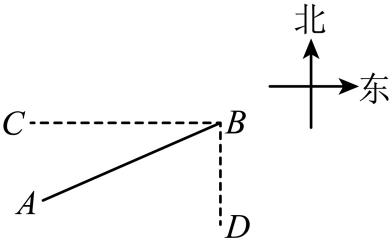
故选：A．
2．（24-25七年级上·吉林四平·期末）如图所示，射线OA表示 28°方向，∠AOB= °．
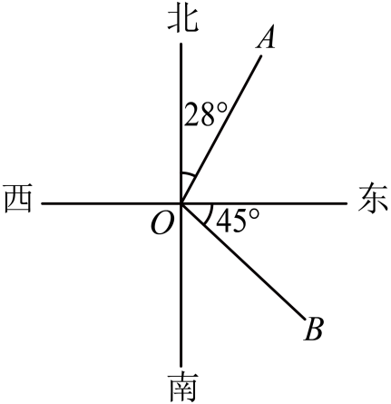
【答案】 北偏东 107
【分析】本题考查了方向角，角的计算，正确理解题意，知道东南方向是表示45°为本题的解题关键．
先根据题意理清射线OA表示北偏东28°方向，得出∠AOB=90°−28°+45°，计算即可得出结论．
【详解】解：因为射线OA表示北偏东28°方向，射线OB表示东南方向，
由图可知∠AOB=90°−28°+45°=107°．
故答案是：北偏东，107．
3．（24-25七年级下·辽宁沈阳·期末）如图，OA是北偏东30°，OB为南偏东20°，则∠AOB等于 ．

【答案】130°
【分析】本题考查了方向角，由题意可得∠AOC=30°，∠BOD=20°，再利用平角的定义计算即可得解，熟练掌握方向角的相关知识点是解此题的关键．
【详解】解：如图：
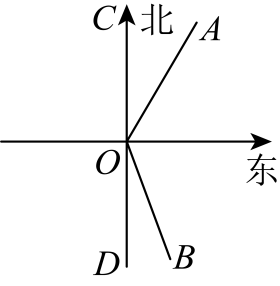
∵OA是北偏东30°，OB为南偏东20°，
∴∠AOC=30°，∠BOD=20°，
∴∠AOB=180°−∠AOC−∠BOD=130°，
故答案为：130°．
【考点47 度分秒的换算】
1．下列运算正确的是（ ）
A．34.5°=34°5′ B．90°−23°45′=66°15′
C．12°34′×2=25°18′ D．24°24′=24.04°
【答案】B
【分析】本题考查了度分秒的换算，掌握度分秒的换算是解题的关键．
本题考查了度分秒的换算，掌握1°=60′，1′=60″是解题的关键．
【详解】解：A、34.5°=34°30′，原计算错误，故此选项不符合题意；
B、90°−23°45′=66°15′，原计算正确，故此选项符合题意；
C、12°34′×2=24°68′=25°8′，原计算错误，故此选项不符合题意；
D、24°24′=24.4°，原计算错误，故此选项不符合题意；
故选：B
2．（24-25七年级上·山西运城·期末）已知∠1+∠2=90°，若∠1=27°32′，则∠2的度数为（ ）
A．63°32′ B．62°28′ C．62°32′ D．63°28′
【答案】B
【分析】本题考查角度的加减计算．根据角度的加减法计算即可，注意进率为1°=60′；
【详解】解：∵∠1+∠2=90°，∠1=27°32′，
∴∠2=90°−∠1=90°−27°32′=62°28′，
故选：B．
3．（24-25六年级下·山东青岛·期中）计算
(1)180°−37°42′56″
(2)25°36′×4
【答案】(1)142°17′4″
(2)102°24′
【分析】本题考查角度的运算，掌握角度是60进制和相关运算法则是解题的关键．
（1）根据角度是60进制和角度的加减运算求解即可．
（2）根据角度是60进制和角度的乘法运算求解即可．
【详解】（1）180°−37°42′56″
=179°59′60″−37°42′56″
=142°17′4″
（2）25°36′×4
=100°144′
=102°24′
【考点48 角平分线的定义】
1．（25-26七年级上·河北秦皇岛·期中）如图，O为直线DA上一点，∠AOB=130°，OE是∠AOB的平分线，∠FOB=90°．
(1)求∠DOB的度数．
(2)求∠AOF和∠FOE的度数．
【答案】(1)50°
(2)∠AOF=40°，∠FOE=25°
【分析】本题主要考查了几何图形中角度的计算，角平分线的定义，正确理清角与角之间的关系是解题的关键．
（1）根据平角的定义求解即可；
（2）先求出∠AOF的度数，再由角平分线的定义求出∠AOE的度数，最后根据角的和差关系可得答案．
【详解】（1）解：∵∠DOB+∠AOB=180°，∠AOB=130°，
∴∠DOB=180°−∠AOB=180°−130°=50°．
（2）解：∵∠AOB=130°，∠BOF=90°，
∴∠AOF=∠AOB−∠BOF=130°−90°=40°，
∵OE平分∠AOB，
∴∠AOE=12∠AOB=12×130=65°．
∴∠FOE=∠AOE−∠AOF=65°−40°=25°．
2．（25-26七年级上·辽宁沈阳·期中）已知∠AOB=80°，射线OC和射线OD在∠AOB内部，且∠AOC=30°，∠COD=40°，射线OE,OF分别平分∠BOC，∠COD，则∠EOF= °.
【答案】5
【分析】本题主要考查了角的和差，角平分线的定义，
根据已知条件，计算∠BOC和∠COD的度数，再利用角平分线的定义得到∠COE和∠COF度数，最后求∠EOF的度数．
【详解】解：如图所示，
∵∠AOB=80°，∠AOC=30°，
∴∠BOC=∠AOB−∠AOC=80°−30°=50°．
∵OE平分∠BOC，
∴∠COE=12∠BOC =12×50°=25°．
∵∠COD=40°，OF平分∠COD，
∴∠COF=12∠COD=12×40°=20°．
∴∠EOF=∠COE−∠COF=25°−20°=5°．
故答案为：5．
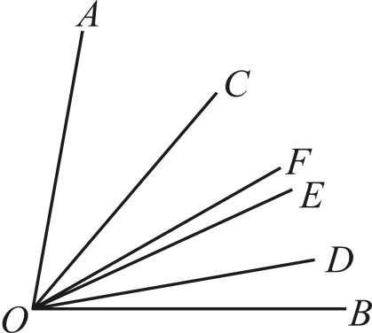
3．（24-25七年级上·福建福州·期末）阅读理解：已知一个锐角，从这个角的顶点出发，在角的外部作一条射线，分别与这个角的两边组成两个角，若这两个角互为余角，则称该射线为“外邻余线”，例如，如图1，已知∠AOB(∠AOB<90°)，射线OC在∠AOB外部，射线OC分别与∠AOB的两边OA、OB所组成的两个角是∠AOC和∠BOC，若∠AOC和∠BOC互为余角，则称射线OC是∠AOB的“外邻余线”．

(1)如图1，已知∠AOB=50°，OC是∠AOB的“外邻余线”．求∠BOC的度数．
(2)如图2，已知OC是∠AOB的“外邻余线”，OD是∠AOC的“外邻余线”，且∠BOD=90°，试判断OA，OC是否为∠BOD的三等分线？并说明理由．
(3)如图3，已知点A，O，D在同一条直线上，∠AOB=α(α<60°)，OE平分∠BOD，OF平分∠DOE，OM和ON分别是∠DOF和∠EOF的“外邻余线”，求∠MON的度数（用含α的式子表示）．
【答案】(1)∠BOC=70°或20°
(2)OA，OC是∠BOD三等分线，理由见解析
(3)45°−14α
【分析】本题考查了余角的定义及性质，角平分线的定义，角的三等分线，掌握余角的定义和性质是解题的关键．
(1)根据“外邻余线”的定义得∠AOC+∠BOC=90°，考虑到OC的不同位置分两种情况讨论即可求解；
(2)根据“外邻余线”及余角性质得∠AOC=∠COD，进而可得∠COD=∠AOC=30°，得到
∠AOB=∠AOC=∠COD=13∠BOD，即可求解；
(3)由平角定义得∠BOD=180°−∠AOB=180°−α，进而由角平分线的定义得∠DOE=12∠BOD=90°−12α，∠DOF=∠EOF=12∠DOE=45°−14α，再根据“外邻余线”的定义得∠MOF=∠NOE，即得∠MON=∠NOE+∠MOE=∠MOF+∠MOE=∠EOF，即可求解；
【详解】（1）解：∵OC是∠AOB的“外邻余线”，
∴∠AOC+∠BOC=90°，
情况1:OC在OA远离OB的一侧
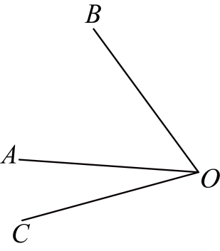
此时∠BOC=∠AOC+∠AOB．
设∠AOC=x，则∠BOC=x+50°，
∴x+x+50°=90°，得x=20°，
∴BOC=20°+50°=70°．
情况2:OC在OB远离OA的一侧
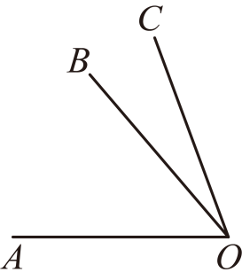
此时∠AOC=∠BOC+∠AOB．
设∠BOC=y，则∠AOC=y+50°，
∴y+50°+y=90°，解得y=20°，
综上,∠BOC的度数为20°或70°．
（2）解：OA，OC是∠BOD三等分线，理由如下：
∵OC是∠AOB的“外邻余线”，
即∠AOC与∠BOC互余，
∴∠AOC+∠BOC=90°，
又∵∠BOD=90°，
∴∠COD+∠BOC=90°，
∴∠AOC=∠COD；
∵OD是∠AOC的“外邻余线”，
即∠AOD与∠COD互余，
∴∠AOD+∠COD=90°，
∴2∠COD+∠COD=90°，
∴∠COD=∠AOC=30°，
∴∠AOB=∠BOD−∠AOC−∠COD=30°．
∴∠AOB=∠AOC=∠COD=13∠BOD，
∴OA，OC是∠BOD的三等分线；
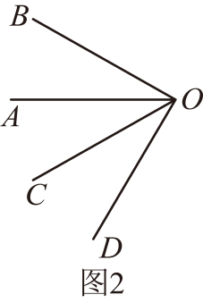
（3）解：∵点A，O，D在同一条直线上，∠AOB=α，
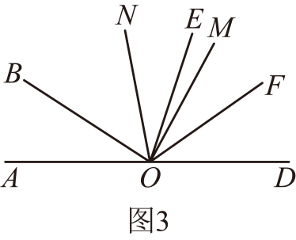
∴∠AOB+∠BOD=180°，
∴∠BOD=180°−∠AOB=180°−α．
∵OE平分∠BOD，
∴∠DOE=12∠BOD=90°−12α，
∵OF平分∠DOE，
∴∠DOF=∠EOF=12∠DOE=45°−14α，
∵OM是∠DOF的“外邻余线”，ON是∠EOF的“外邻余线”，
∴∠MOF+∠MOD=90°，∠NOE+∠NOF=90°，
∴∠MOF+∠MOF+∠DOF=90°，∠NOE+∠NOE+∠EOF=90°．
即2∠MOF+∠DOF=90°，2∠NOE+∠EOF=90°，
又∵∠DOF=∠EOF，
∴2∠MOF=2∠NOE，
∴∠MOF=∠NOE，
∴∠MON=∠NOE+∠MOE=∠MOF+∠MOE=∠EOF=45°−14α．
【考点49 角的大小比较】
1．（24-25七年级上·北京·期末）右图所示的网格是正方形网格，∠ABC ∠DEF．(填“>”，“=”或“<”)
【答案】＜
【分析】本题主要考查了角度大小的比较，解题的关键是熟练掌握网格特点，得出∠DEF=45°，∠ABC<45°．
【详解】解：根据网格特点可知，∠DEF=45°，∠ABC<45°，
∴∠ABC<∠DEF．
故答案为：<．
2．（24-25七年级上·江西吉安·期末）已知∠α=39°18′，∠β=39.18°，∠γ=39.3°，下面结论正确的是（ ）
A．∠α=∠γ>∠β B．∠γ>∠α=∠β
C．∠α<∠β<∠γ D．∠γ<∠α<∠β
【答案】A
【分析】此题考查了角的大小的比较，掌握角的度，分，秒之间的转化是解题的关键．
将∠α=39°18′转化为39.3°，即可得出答案．
【详解】解：由∠α=39°18′=39°+(18÷60)°=39°+0.3°=39.3°，
又因为∠β=39.18°,∠γ=39.3°，
所以∠α=∠γ>∠β．
故选：A．
3．（24-25七年级上·重庆江津·期末）如图，直角三角板DOE的直角顶点O在直线AB上，OE平分∠BOF．

(1)比较∠AOD和∠DOF的大小，并说明理由；
(2)若∠EOF:∠AOF=5:8，求∠BOE的度数．
【答案】(1)∠AOD=∠DOF，理由见解析
(2)50°
【分析】本题主要考查了角的比较大小和角平分线有关的计算，一元一次方程的应用，解决此题的关键是熟练运用角平分线的定义及角的和差列出方程式．
（1）先说明∠AOD+∠EOB=90°，再说明∠BOE=∠EOF，从而得出∴∠EOF+∠AOD=90°，再根据∠FOD+∠EOF=90°，即可得到∠AOD=∠DOF；
（2）根据∠EOF:∠AOF=5:8，设∠EOF=5x°，∠AOF=8x°，则∠BOE+∠EOF+∠AOF=5x°+5x°+8x°=180°，列方程即可求得．
【详解】（1）解： ∠AOD=∠DOF；理由如下：
∵∠DOE=90°，
∴∠AOD+∠EOB=180°−∠DOE=90°，
∵OE平分∠BOF，
∴∠BOE=∠EOF，
∴∠EOF+∠AOD=90°，
∵∠EOF+∠DOF=90°，
∴∠AOD=∠DOF；
（2）解：∵∠EOF:∠AOF=5:8，
设∠EOF=5x°，∠AOF=8x°，
∵∠BOE=∠EOF=5x°，
∴∠BOE+∠EOF+∠AOF=5x°+5x°+8x°=180°，
∴x=10°，
∴∠BOE=5×10°=50°．
【考点50 角的计算】
1．（25-26八年级上·内蒙古乌兰察布·期中）如图，△ABC是一块直角三角尺，其中∠BAC=30°，直尺的一边DE经过顶点A，若∠DAC=32∠BAE，则∠DAB的度数为 ．
【答案】120°
【分析】本题考查三角形内角和定理，解答本题的关键是理解题意，利用数形结合的思想进行解答．
先求得∠BAE+∠DAC=150°，再根据∠DAC=32∠BAE，求出∠BAE的度数，即可由∠DAB=180°−∠BAE求解．
【详解】解：∵∠BAE+∠BAC+∠DAC=180°，∠BAC=30°，
∴∠BAE+∠DAC=180°−∠BAC=180°−30°=150°，
∵∠DAC=32∠BAE，
∴32∠BAE+∠BAE=150°，
解得∠BAE=60°，
∴∠DAB=180°−∠BAE=180°−60°=120°，
故答案为：120°．
2．（24-25七年级下·黑龙江大庆·期中）如图1，射线OC在∠AOB的内部，图中共有3个角：∠AOB，∠AOC和∠BOC，若其中有一个角的度数是另一个角度数的三倍，则称射线OC是∠AOB的“启仔等分线”．如图2，∠MPN=80∘，若射线PE绕点P从PN位置开始，以每秒8∘的速度顺时针旋转，当∠EPN首次等于180∘时停止旋转，设旋转的时间为t(秒)．当t= 时，射线PN是∠EPM的“启仔等分线”．

【答案】103秒或5秒或20秒
【分析】本题考查角的运算中的新定义，仔细分析动态过程，确定三种情况是解题的关键．
根据旋转的过程，依次设定∠MPE=3∠EPN，∠MPN=3∠EPN，∠MPE=3∠MPN，∠NPE=3∠MPN四种情况进行分析．
【详解】解：由题意，可分四种情况：
当∠MPE=3∠EPN时，∠EPN=80∘÷2=40∘，
所以t= 40∘÷8∘=5秒；
当∠MPN=3∠EPN时，∠EPN=80∘÷3=803∘，
所以t= 803∘÷8∘=103秒；
当∠MPE=3∠MPN时，∠EPN=80∘×2=160∘，
所以t= 160∘÷8∘=20秒；
当∠NPE=3∠MPN时，∠EPN=80∘×3=240∘，
不符合条件“当∠EPN首次等于180∘时停止旋转”，舍去．
故答案为：5秒或103秒或20秒．
3．（25-26七年级上·江西吉安·期中）已知将一副三角尺（直角三角尺OAB和OCD）的两个顶点重合于点O，∠AOB=90°，∠COD=30°；
(1)如图1，将三角尺OCD绕点O逆时针方向转动，当OB恰好平分∠COD时，求∠AOC度数；
(2)如图2，当三角尺OCD摆放在∠AOB内部时，作射线OM平分∠AOC，射线ON平分∠BOD，如果，三角尺OCD在∠AOB内绕点O任意转动，∠MON的度数是否发生变化？如果不变，求其值；如果变化，说明理由．
【答案】(1)75°
(2)不变，∠MON=60°
【分析】本题主要考查角的和差关系及角平分线的定义，熟练掌握角的和差关系及角平分线的定义是解题的关键；
（1）由题意易得∠BOC=12∠COD=15°，然后问题可求解；
（2）由题意易得∠MOC=12∠AOC，∠DON=12∠BOD，然后根据角的和差关系可进行求解．
【详解】（1）解：∵OB平分∠COD，∠COD=30°，
∴∠BOC=12∠COD=15°，
∴∠AOC=∠AOB−∠BOC=90°−15°=75°；
（2）解：不变，∠MON=60°，理由如下：
∵OM平分∠AOC，ON平分∠BOD，
∴∠MOC=12∠AOC，∠DON=12∠BOD，
∵∠MOC+∠DON=12∠AOC+12∠BOD=12∠AOC+∠BOD =12∠AOB−∠COD=12×90°−30°=30°，
∴∠MON=∠MOC+∠DON+∠COD=60°．
4．（25-26七年级上·河北唐山·期中）如图，点O为直线AB上一点，以O为顶点的直角∠COD绕点O在直线AB上方旋转，作射线OE、OF分别平分∠AOC和∠BOD．
（1）当∠AOE=28°时，∠DOF的度数为 ；
（2）在旋转过程中，∠EOF的度数始终为 ．
【答案】 17° 135°
【分析】本题考查了角平分线定义，角度的和与差，掌握知识点并应用是解题的关键．
（1）由题意可得∠AOC+∠BOD=90°，因为OE、OF分别平分∠AOC和∠BOD，所以∠AOE=∠COE=12∠AOC，∠DOF=∠BOF=12∠BOD，则有∠AOE+∠DOF=45°，然后代入即可求解；
（2）由题意可得∠AOC+∠BOD=90°，因为OE、OF分别平分∠AOC和∠BOD，所以∠AOE=∠COE=12∠AOC，∠DOF=∠BOF=12∠BOD，则有∠COE+∠DOF=45°，然后代入即可求解．
【详解】解：（1）∵∠COD=90°，
∴∠AOC+∠BOD=90°，
∵OE、OF分别平分∠AOC和∠BOD，
∴∠AOE=∠COE=12∠AOC，∠DOF=∠BOF=12∠BOD，
∴∠AOE+∠DOF=45°，
∵∠AOE=28°，
∴∠DOF=45°−28°=17°，
故答案为：17°；
（2）∵∠COD=90°，
∴∠AOC+∠BOD=90°，
∵OE、OF分别平分∠AOC和∠BOD，
∴∠AOE=∠COE=12∠AOC，∠DOF=∠BOF=12∠BOD，
∴∠COE+∠DOF=45°，
∴∠EOF=∠COD+(∠COE+∠DOF)=90°+45°=135°，
故答案为：135°．
【考点51 多边形和圆的初步认识】
1．将一张正方形的纸片减去一个角后，剩下纸片的角的个数为（ ）
A．5 B．3或4 C．4或5 D．3或4或5
【答案】D
【分析】分三种情况，画出图形，即可得出结果．
【详解】解：如图，减去一个角有三种情况，
∴剩下纸片的角的个数为3或4或5；
故选D．
【点睛】本题主要考查了在不同情况下正方形的不同剪法，做此题考虑要全面不要遗漏，解答此题应根据题意，结合图形进行操作，进而得出结论．
2．过七边形的一个顶点可以画n条对角线，则n的值是（ ）
A．3 B．4 C．5 D．6
【答案】B
【分析】本题考查了多边形的对角线：多边形对角线的条数问题，根据n边形有n个顶点，且过一个顶点能画n−3条对角线，进行作答即可．
【详解】解：∵过七边形的一个顶点可以画n条对角线，
∴n=7−3=4，
故选：B．
3．（24-25七年级上·陕西西安·阶段练习）如图，阴影部分扇形的圆心角大小是 ．

【答案】54°/54度
【分析】本题可先求出阴影部分扇形所占的比例，再根据圆心角与比例的关系求出圆心角的度数．本题主要考查了扇形统计图的相关知识，熟练掌握扇形统计图中各部分比例与圆心角的关系是解题的关键．
【详解】解：∵ 整个圆的比例为100%，已知其中两部分分别占20%和65%
∴ 阴影部分扇形所占比例为1−20%−65%=15%
∵ 整个圆的圆心角为360°
∴ 阴影部分扇形的圆心角为360°×15%=54°
故答案为：54°．
4．过某一个多边形一个顶点的所有对角线，将这个多边形分成4个三角形，这个多边形的边数是 ．
【答案】6
【分析】本题考查多边形的对角线规律，解题的关键是利用多边形的对角线把多边形分成n−2个三角形．
n边形中过一个顶点的所有对角线有n−3条，把这个多边形分成n−2个三角形，然后即可求解．
【详解】解：n−2=4，即n=6，
故答案为：6；
【考点52 方程的定义】
1．（24-25七年级上·全国·课后作业）下列各式中，属于方程的是（ ）
A．2x+3−x+2 B．3x+1>4x−2
C．3x−1=4x+2 D．2+5=7
【答案】C
【分析】本题主要考查的是方程的定义，含有未知数的等式叫方程，据此可得出正确答案．
【详解】A．2x+3−x+2，不含“＝”，不是方程；
B．3x+1>4x−2，含不等号，不是方程；
C．3x−1=4x+2是方程；
D．2+5=7，不含未知数，不是方程；
故选：C．
2．下列式子：①3x+2=5x−1；②−122+34=1；③2x+3≤5；④y2−1=2y；⑤25x+7y=36，其中是方程的是 ．（填序号）
【答案】①④⑤
【分析】本题考查方程的定义：含有未知数的等式叫方程．根据方程的定义逐个判定即可．
【详解】解：①3x+2=5x−1符合方程定义，故①是方程；
②−122+34=1没有未知数，故②不是方程；
③2x+3≤5不是等式，故③不是方程；
④y2−1=2y符合方程定义，故④是方程；
⑤25x+7y=36符合方程定义，故⑤是方程；
∴是方程的有①④⑤．
故答案为：①④⑤．
3．在①2−5；②1+7x=−8y+3；③x=6；④3x=2x−9；⑤2x>7中，方程共有（ ）
A．1个 B．2个 C．3个 D．4个
【答案】C
【分析】本题考查方程的定义，掌握方程的定义：含有未知数的等式是解题的关键．
【详解】解：在①2−5；②1+7x=−8y+3；③x=6；④3x=2x−9；⑤2x>7中②③④是方程．
故选：C．
【考点53 方程的解】
1．（25-26七年级上·黑龙江齐齐哈尔·月考）下列方程中，解为x=2的是（ ）
A．3x+6=0 B．3x−2=4 C．2x+3=−7 D．x−3=5
【答案】B
【详解】本题考查了一元一次方程的求解，准确的计算是解决本题的关键．
通过将x=2代入各方程，检验方程是否成立即可．
【分析】解：A、左边=3×2+6=12≠0，该选项错误，不符合题意；
B、左边=3×2−2=4，该选项正确，符合题意；
C、左边=2×2+3=7≠−7，该选项错误，不符合题意；
D、左边=2−3=−1≠5，该选项错误，不符合题意．
故选B．
2．（25-26七年级上·重庆璧山·期中）若x=2是方程ax+3x=4的解，则a的值是（ ）
A．−1 B．5 C．1 D．−5
【答案】A
【分析】本题主要考查一元一次方程的解及其解法，熟练掌握一元一次方程的解及其解法是解题的关键；将x=2代入方程ax+3x=4中，通过解一元一次方程求出a的值即可．
【详解】解：把x=2代入方程ax+3x=4得：
2a+3×2=4，
解得：a=−1；
故选：A．
3．（25-26七年级上·辽宁铁岭·期中）已知关于x的方程3x−2k=4的解是x=k，则k的值是 ．
【答案】4
【分析】本题考查了方程的解的定义，解题的关键是将方程的解代入原方程建立关于k的方程．
根据方程的解的定义，把x=k代入方程3x−2k=4，得到关于k的方程，求解即可得到k的值．
【详解】解：把x=k代入方程3x−2k=4，
得3k−2k=4，
即k=4．
故答案为4．
【考点54 一元一次方程的定义】
1．（24-25七年级上·辽宁抚顺·期末）下列方程中，是一元一次方程的是（ ）
A．x2+2x+1=4 B．8y−9=9−y
C．2x+y=4 D．2x−1=8
【答案】B
【分析】本题考查一元一次方程的识别，解题的关键是掌握一元一次方程的定义；
根据一元一次方程的定义逐项判断即可，即只含有一个未知数、未知数的最高次数为1且两边都为整式的等式．
【详解】解：A、x2+2x+1=4中未知数的次数为2，不是一元一次方程，不符合题意；
B、8y−9=9−y是一元一次方程，符合题意；
C、2x+y=4中有2个未知数，不是一元一次方程，不符合题意；
D、2x−1=8中等号左边不是整式，不是一元一次方程，不符合题意；
故选：B
2．（24-25七年级上·河南·期末）若方程m−1x2+mx−x+2=0是关于x的一元一次方程，则m的值为（ ）
A．1 B．1或−1 C．−1 D．2
【答案】C
【分析】本题考查根据一元一次方程的定义，求参数的值，根据一元一次方程的定义，得到m−1=0且m−1≠0，进行求解即可．
【详解】解：m−1x2+mx−x+2=0，整理，得：m−1x2+m−1x+2=0，
∵方程为一元一次方程，
∴m−1=0且m−1≠0，
解得：m=−1；
故选C．
3．（24-25七年级上·全国·期末）已知(m−1)xm−2024=2025是关于x的一元一次方程，则m= ．
【答案】−1
【分析】本题考查的是一元一次方程的定义，熟知只含有一个未知数（元），且未知数的次数是1，这样的方程叫一元一次方程是解答此题的关键．
根据一元一次方程的定义列式求解即可．
【详解】解：∵m−1xm−2024=2025是关于x的一元一次方程，
∴m=1,m−1≠0，
解得：m=±1,m≠1，
∴m=−1，
故答案为：−1.
【考点55 等式的性质】
1．（24-25七年级上·陕西安康·期末）已知3m+2n−6=m+4n，利用等式的性质比较m与n的大小关系：m n．（填“>”“<”或“=”）
【答案】>
【分析】本题考查了等式的性质，以及作差法比较大小，解题的关键在于理解两个数的差大于0，被减数大于减数；两个数的差等于0，被减数和减数相等；两个数的差小于0，被减数小于减数．把等式变形为m减n等于多少的形式，再进行判断，即可解题．
【详解】解：3m+2n−6=m+4n，
3m−m+2n−4n=6，
2m−2n=6，
2m−n=6，
m−n=3>0，
∴m>n，
故答案为：>．
2．（25-26七年级上·湖北宜昌·期中）下列变形中，不正确的是（ ）
A．若a−3=b−3，则a=b B．若a2=b2，则a=b
C．若a=b，则ac2+1=bc2+1 D．若ac=bc，则a=b
【答案】D
【分析】本题考查等式的性质，平方的非负性，掌握相关知识是解决问题的关键．等式两边同时加上或减去同一个数，或者同时乘以或除以同一个非零数，等式仍然成立．据此逐项判断即可．
【详解】解：A：等式两边加3，得a=b，正确；
B：等式两边乘2，得a=b，正确；
C：∵ c2+1≥1，分母恒不为零，等式两边除以c2+1，成立；
D：当c=0时，ac=bc恒成立，但a与b可能不相等，故不正确．
故选：D．
3．（24-25七年级下·浙江杭州·期中）已知b+c=t，a+b=k
（1）若t=2k=2，则c与a的等量关系是 ．
（2）若c−2a=3t，则c−3a= ．（用含k，t的代数式表示）
【答案】 c=a+1 5t+k
【分析】本题考查了等式的性质，掌握等式的性质是解题的关键．
（1）根据题意列出等式，然后利用等式的性质即可得出答案；
（2）根据题意列出等式，然后利用等式的性质即可得出答案．
【详解】解：（1）∵b+c=t，a+b=k，
∴b=t−c，b=k−a，
∴t−c=k−a，
∵t=2k=2，
∴t=2,k=1，
∴2−c=1−a，
∴c=a+1，
故答案为：c=a+1；
（2）由（1）知，t−c=k−a，
∴c=a+t−k，
∵c−2a=3t，
∴c=2a+3t，
∴a+t−k=2a+3t，
∴a=−2t−k，
∴c=−t−2k，
∴c−3a=−t−2k−3−2t−k=−t−2k+6t+3k=5t+k，
故答案为：5t+k．
【考点56 解一元一次方程】
1．（25-26七年级上·安徽马鞍山·期中）解方程：
(1)2100−15x=60+5x
(2)2x+13−1=x−10x+16．
【答案】(1)
x=4
(2)
x=38
【分析】本题考查了一元一次方程的解法，去分母、去括号、移项、合并同类项、系数化为1，这是解一元一次方程的一般步骤，熟练掌握解一元一次方程的方法是解题的关键．
（1）先去括号，然后移项、合并同类项，最后系数化为1即可；
（2）先去分母，再去括号，然后移项、合并同类项，最后系数化为1．
【详解】（1）解：去括号得：200−30x=60+5x
移项、合并同类项得：−35x=−140
系数化为1得：x=4；
（2）去分母得：22x+1−6=6x−10x+1
去括号得：4x+2−6=6x−10x−1
移项合并，系数化为1得：x=38．
2．（25-26七年级上·安徽淮北·期中）小军在解关于x的方程2x+15−1=x+m2去分母时，方程左边的−1没有乘10，因而求得方程的解为x=−4，则这个方程的正确解为 ．
【答案】x=−13
【分析】本题考查一元一次方程的解及解一元一次方程，由题意可知x=−4是方程4x+2−1=5x+5m的解，然后可求得m的值，再将m的值代入原方程求解即可．解题的关键是掌握解一元一次方程的基本步骤．
【详解】解：根据题意得：x=−4是方程4x+2−1=5x+5m的解，
∴4×−4+2−1=5×−4+5m，
解得：m=1，
∴原方程为2x+15−1=x+12，
去分母，得：4x+2−10=5x+5，
移项，得：4x−5x=+5−2+10，
合并同类项，得：−x=13，
系数化为1，得：x=−13．
故答案为：x=−13．
3．（25-26七年级上·安徽合肥·期中）把方程3x0.2−1=2x0.3的分母化为整数可得方程（ ）
A．30x2−10=20x3 B．30x2−1=20x3
C．30x2−10=2x3 D．3x2−10=2x3
【答案】B
【分析】本题考查了解一元一次方程．
通过将分母中的小数化为整数，利用分数的基本性质，将分子和分母同时乘以10，得到新的方程即可．
【详解】解：将原方程3x0.2−1=2x0.3两边的分子和分母同时乘以10得：30x2−1=20x3，
故选：B．
【考点57 一元一次方程的解】
1．（25-26七年级上·安徽淮北·期中）若方程3x−1=2x+1的解与关于x的方程6−2k=2x−1的解相同，则k的值为（ ）
A．59 B．−89 C．−1 D．−53
【答案】C
【分析】此题考查同解方程，先解方程 3(x−1)=2(x+1) 得到 x 的值，再代入方程 6−2k=2(x−1) 求解 k．
【详解】∵ 方程 3(x−1)=2(x+1)，
∴ 展开得 3x−3=2x+2，
∴ 移项得 3x−2x=2+3，
∴ x=5，
∵ 两方程解相同，
∴ 将 x=5 代入 6−2k=2(x−1)，
∴ 6−2k=2(5−1)=2×4=8，
∴ 6−2k=8，
∴ −2k=8−6=2，
∴ k=−1，
故 k 的值为 −1，
故选 C．
2．（24-25七年级上·湖北恩施·阶段练习）已知a−3x2−a+3x+8=0是关于x的一元一次方程．
(1)求a的值，并求解上述一元一次方程；
(2)若上述方程的解是关于x的方程5x−2k=4的解的3倍，求k的值．
【答案】(1)a=3；x=43
(2)k=−89
【分析】本题考查了一元一次方程的解，一元一次方程的定义和解一元一次方程，熟知一元一次方程的相关知识是解题的关键．
（1）根据一元一次方程的定义可得a−3=0−a+3≠0，据此求出a=3得到方程−3+3x+8=0，解方程即可得到答案；
（2）根据（1）所求得到关于x的方程5x−2k=4的解为x=13×43=49，据此把x=49代入对应的方程求解即可．
【详解】（1）解：∵a−3x2−a+3x+8=0是关于x的一元一次方程，
∴a−3=0−a+3≠0，
∴a=3，
∴原方程为−3+3x+8=0，
解得x=43
（2）解：由题意得，关于x的方程5x−2k=4的解为x=13×43=49，
∴5×49−2k=4，
解得k=−89．
3．（25-26七年级上·安徽安庆·期中）若关于x的一元一次方程ax=b的解满足x=b+a，则称该方程为“友好方程”．例如：方程2x=−4的解为x=−2，而−2=−4+2，则该方程为“友好方程”．
(1)在方程①−2x=4；②4x=−163；③12x=−1中，为“友好方程”的是_____；（填写序号即可）
(2)若关于x的一元一次方程3x=b是“友好方程”，求b的值；
(3)若关于x的一元一次方程−2x=mn+nn≠0是“友好方程”，且它的解为x=n，求n的值．
【答案】(1)②
(2)b=−92
(3)n=−23
【分析】此题主要考查一元一次方程的解，掌握一元一次方程解题的方法，结合题目中“友好方程”的概念，是解题的关键；
（1）先求出一元一次方程的解，再检验方程的解是否满足“友好方程”的概念，即可判断求解；
（2）先表示出含参数的一元一次方程的解，利用“友好方程”的条件，即可列出等式，求得参数的值；
（3）根据已知方程的解，代入方程，求得m的值，再结合方程是“友好方程”，列出等式，即可求得n的值．
【详解】（1）解：①−2x=4，解得：x=−2，
因为−2+4=2≠−2，
所以该方程不是“友好方程”；
②4x=−163，解得：x=−43，
因为4−163=−43，
所以该方程是“友好方程”；
③12x=−1，解得：x=−2，
因为12−1=−12≠−2，
所以该方程不是“友好方程”；
故答案为：②
（2）解：3x=b，解得：x=b3
因为关于x的一元一次方程3x=b是“友好方程”，
所以3+b=b3，
解得：b=−92；
（3）解：因为x的一元一次方程−2x=mn+nn≠0的解为x=n，
所以−2n=mn+n，
因为n≠0，
所以m=−3，
因为一元一次方程−2x=mn+nn≠0是“友好方程”，
所以−2+mn+n=n，
所以−2−3n+n=n，
解得：n=−23．
【考点58 由实际问题抽象出一元一次方程】
1．（25-26七年级上·黑龙江哈尔滨·期中）一台仪器由1个A部件和3个B部件构成．用1立方米钢材可以做40个A部件或240个B部件．现要用6立方米钢材制作这种仪器，应用多少立方米钢材做A部件，多少立方米钢材做B部件，才能制作尽可能多的仪器？设用x立方米钢材制作A部件，则可列式为（ ）．
A．40x=2406−x×3 B．3×40x=2406−x
C．240x=406−x×3 D．3×240x=406−x
【答案】B
【分析】本题主要考查配套问题，关键是根据部件比例关系列方程，确保部件数量匹配以制作最多仪器．设用x立方米钢材做A部件，则做B部件的钢材为6−x立方米，根据仪器配套要求（1个A部件配3个B部件），B部件数量应等于A部件数量的3倍，由此列方程即可．
【详解】解：∵用x立方米做A部件，则用6−x立方米做B部件，
∴由题意可得，3×40x=2406−x．
故选：B．
2．（25-26七年级上·江苏南京·期中）如图，将正方形纸片剪去一张宽为4cm的长方形纸条，再将剩下的纸片剪去一张宽为5cm的长方形纸条，两次剪去的长方形纸条面积相等．设原正方形纸片的边长为xcm，根据题意可列方程为 ．
【答案】4x=5x−4
【分析】本题主要考查了列一元一次方程，掌握数形结合思想是解题的关键．
根据纸条的剪法结合正方形的边长为xcm，即可得出两次剪下的长条的长和宽，再根据两次剪下的长条面积相等列出关于x的一元一次方程即可．
【详解】解：由题意可得：第一次剪下长条的长为xcm，宽为4cm，即面积为4xcm2；
第二次剪下长条的长为x−4cm，宽为5cm，即面积为5x−4cm2；
∵两次剪去的长方形纸条面积相等，
∴4x=5x−4．
故答案为：4x=5x−4．
3．（25-26七年级上·浙江舟山·期中）在解决问题“小喜在A、B两地间进行骑车训练，去时每小时行18千米，用了2.5小时；返回时用了3小时，每小时行多少千米？”时有四种方案，其中错误的方案是（ ）
方案一：18×2.5÷3 方案二：2.5÷3×18
方案三：设每小时行x千米．18×2.5=3x 方案四：设每小时行x千米．2.53=18x
A．方案一 B．方案二 C．方案三 D．方案四
【答案】D
【分析】本题考查行程问题中速度、时间和路程的关系．由于A、B两地间路程不变，去时和返回的路程相等．根据路程=速度×时间，可求返回速度．方案四错误地认为时间比等于速度比，而实际上速度与时间成反比．
【详解】解：∵路程相等，
∴去时路程=返回路程．
即18×2.5=3x，其中x为返回速度．
解得 x=18×2.5÷3=15千米/小时．
方案一：18×2.5÷3=45÷3=15，正确；
方案二：2.5÷3×18=2.53×18=2.5×6=15，正确；
方案三：设每小时行 x千米，有18×2.5=3x，正确；
方案四：设每小时行x千米，有 2.53=18x，但实际应为 18x=32.5，故错误．
∴ 错误方案是方案四，
故选：D．
【考点59 一元一次方程的应用】
1．（25-26七年级上·山东潍坊·期中）某超市在双十一期间推出优惠活动，优惠的具体方案如下表：
一次性购物金额 | 优惠办法 |
不超过200元 | 不予优惠 |
超过200元但不超过400元 | 超过200元的部分给予9折优惠 |
超过400元 | 超过200元但不超过400元的部分给予9折优惠 超过400元的部分给予8折优惠 |
(1)若小亮一次购买原价300元的商品，他实际付款________元；若一次购买原价600元的商品，他实际付款________元；
(2)若小亮在该超市一次购物x元，当x超过200元但不超过400元时，他实际付款多少元（用含x的代数式表示）？
(3)如果小亮一次购物实际付款524元，试求他这次购买商品的原价是多少元？
【答案】(1)290；540
(2)0.9x+20元
(3)580元
【分析】本题主要考查了列代数式，一元一次方程的应用，理解优惠方案中的付费方式是解题的关键．
（1）利用一次性购物超过200元但不超过400元的优惠方案和超过400元的优惠方案解析计算即可得出结论；
（2）根据超过200元但不超过400元的优惠方案列出代数式即可；
（3）利用相关优惠方式进行计算即可得出结论．
【详解】（1）解：200+300−200×0.9=200+100×0.9=200+90=290（元）；
∵600>400，
∴200+200×0.9+600−200−200×0.8=200+180+160=540（元），
故答案为：290；540；
（2）解：当200<x≤400时，实际付款为200+x−200×0.9=0.9x+20（元），
答：当x超过200元但不超过400元时，他实际付款0.9x+20元；
（3）解：当原价为400元时，实际付款为200+200×0.9=380（元），
∵524>380，
∴原价超过400元，
设原价为x元，根据题意得，
200+200×0.9+x−400×0.8=524，
解得：x=580，
答：他这次购买商品的原价是580元．
2．（25-26七年级上·重庆璧山·期中）某水稻实验基地防治病害虫有无人机喷洒和人工打药两种方式．在一次作业中，一架无人机工作2小时和一名工人工作6小时，共完成了320亩的打药任务（不重复作业），通过测量对比发现无人机每小时作业的面积恰好是人工的5倍．
(1)请问一名工人和一架无人机每小时各完成多少亩？
(2)一架无人机和一名工人共同作业8小时能否完成1000亩的打药任务？请说明理由．
【答案】(1)一名工人每小时完成20亩,一架无人机每小时完成100亩
(2)不能完成，见解析
【分析】本题考查了一元一次方程的应用，熟练掌握解方程是理解题的关键．
（1）设一名工人每小时完成x亩,一架无人机每小时5x亩，根据题意，得2×5x+6x=320，解方程即可．
（2）计算一架无人机和一名工人共同作业8小时完成的总工作量，与1000亩比较，解答即可．
【详解】（1）解：设一名工人每小时完成x亩,一架无人机每小时5x亩，由题意得：
2×5x+6x=320，
解得x=20，
5x=5×20=100，
即一名工人每小时完成20亩,一架无人机每小时完成100亩；
（2）解：不能完成，理由如下：
一架无人机和一名工人共同作业8小时完成的工作量为：
8×20+100=960<1000，
故不能完成任务．
3．（2025七年级上·河北·专题练习）七年级一班共有学生50人，其中男生人数比女生人数多6人，劳动技术课上，老师组织同学们自己动手设计制作便携式垃圾盒，每名学生一节课能做盒身12个或盒底26个．
(1)七年级一班有男生和女生各多少人？
(2)原计划女生负责做盒身，男生负责做盒底，每个盒身匹配2个盒底，那么这节课做出的盒身和盒底不能完全配套，最后决定男生去支援女生，问有多少名男生去支援女生，才能使这节课制作的盒身和盒底刚好配套．
【答案】(1)男生28人，女生22人
(2)4名
【分析】本题考查了一元一次方程的应用，找准等量关系，正确列出一元一次方程是解题的关键．
（1）设七年级一班有女生x人，则有男生(x+6)人，根据七年级一班共有学生50人，可列出关于x的一元一次方程，解之即可得出结论；
（2）设需要m名男生去支援女生，才能使这节课制作的盒身和盒底刚好配套，根据制作盒底的总数量是制作盒身总数量的2倍，可列出关于m的一元一次方程，解之即可得出结论．
【详解】（1）解：设七年级一班有女生x人，则有男生(x+6)人，
根据题意，得x+x+6=50，
解方程，得x=22，
∴x+6=22+6=28，
∴七年级一班有男生28人，女生22人；
（2）解：设需要m名男生去支援女生，才能使这节课制作的盒身和盒底刚好配套，
根据题意，得26(28−m)=2×12(22+m)，
解方程，得m=4．
∴需要4名男生去支援女生，才能使这节课制作的盒身和盒底刚好配套．
【考点60 定量数据与定性数据】
1．（24-25八年级下·江苏无锡·月考）某校七年级一班学生的身高情况，小亮统计了全班学生的身高数据，将其整理并绘制出如图所示的频数分布直方图（每组含前一个边界不含后一个边界，如145～150表示大于或等于145且小于150．试题中类似的记号均表示这一含义），对于下列说法：①七年级一班学生总人数是40人；②学生的身高是定量数据；③身高低于155cm的学生人数占总人数的10%；④一半以上的学生身高是155～165cm，正确的序号是 ．

【答案】①②④
【分析】本题考查了频数分布直方图，定量数据，也称为数值数据或统计数据，是指可以通过具体数值来度量和表示的数据等内容，先把各个组的人数相加，得出总人数，再结合表格数据进行逐项分析，即可作答．
【详解】解：依题意，1+4+10+12+8+3+2=40（人），
故①的说法是正确的；
则学生的身高是定量数据，
故②的说法是正确的；
1+440×100%=12.5%，
∴身高低于155cm的学生人数占总人数的12.5%，
故③的说法是错误的；
依题意，10+1240=1120>12，
∴一半以上的学生身高是155～165cm，
故④的说法是正确的；
故答案为：①②④．
2．（24-25七年级上·陕西宝鸡·期末）下列选项中，属于定量数据的是（ ）
A．某校所有教师的学历 B．某班学生的上学交通方式
C．某小区居民的垃圾分类情况 D．花生中蛋白质的含量
【答案】D
【分析】本题考查了调查收集数据的过程与方法，正确理解定量数据的定义是解决问题的关键．利用定量数据，也称为连续数据或数值型数据，是数值型的数据，可以进行数值计算和统计分析，进行判断即可．
【详解】解：A、某校所有教师的学历，不是定量数据，A选项不符合题意；
B、学生上学采用的交通方式，不是定量数据，B选项不符合题意
C、某小区居民的垃圾分类情况，不是定量数据，C选项不符合题意；
D、花生中蛋白质的含量，是定量数据，D选项符合题意．
故选：D．
3．（24-25七年级上·山东青岛·期末）下列说法正确的是（ ）
A．全班同学的上学交通方式是定量数据
B．某池塘中现有鱼的数量是定性数据
C．全班同学家养宠物的种类是定量数据
D．某公司职工的学历是定性数据
【答案】D
【分析】本题考查了调查收集数据的过程与方程：利用定量数据和定性数据的意义进行判断即可．
【详解】解：A、全班同学的上学交通方式是定性数据，故不符合题意；
B、某池塘中现有鱼的数量是定量数据，故不符合题意；
C、全班同学家养宠物的种类是定性数据，故不符合题意；
D、某公司职工的学历是定性数据，故符合题意．
故选：D．
4．下面哪些数据是定量数据，哪些数据是定性数据？
(1)“神舟十七号”载人飞船各零部件质量情况；
(2)某品牌手机电池待机时长；
(3)某电视台春节联欢晚会的收视率；
(4)某班每一位同学的体育成绩（等级）．
【答案】(1)定性数据
(2)定量数据
(3)定量数据
(4)定性数据
【分析】本题考查了调查收集数据的过程与方程，利用定量数据和定性数据的意义进行判断．
【详解】（1）解：“神舟十七号”载人飞船各零部件质量情况是定性数据；
（2）解：某品牌手机电池待机时长是定量数据；
（3）解：某电视台春节联欢晚会的收视率是定量数据；
（4）解：某班每一位同学的体育成绩（等级）是定性数据．
【考点61 普查与抽样调查】
1．（25-26九年级上·重庆潼南·月考）下列调查中，适合采用全面调查（普查）方式的是（ ）
A．对我市中学生观看电影《南京照相馆》情况的调查
B．调查琼江河的水质情况
C．调查某班学生视力情况
D．调查全国初一中学生的平均身高
【答案】C
【分析】本题考查了全面调查，全面调查（普查）适用于调查对象数量较少、易于全面进行的情况．选项C中，某班学生数量有限，适合普查；其他选项调查范围广、对象多，适合抽样调查．
【详解】解：∵全面调查需要对所有调查对象进行逐一调查，
∴适用于对象数量少、调查简便的情况．
选项A（全市中学生）、B（整条河流）、D（全国初一中学生）对象数量多或范围广，普查成本高、难度大，不适合；选项C（某班学生）对象数量少，易于全面调查，
故选：C．
2．（25-26八年级上·全国·课后作业）下列调查中，最适合采用抽样调查的是（ ）
A．了解我校七年级（1）班全体同学周末时间安排情况
B．乘坐飞机时对旅客行李的检查
C．调查某班50名同学的视力情况
D．了解一批汽车的抗撞击能力
【答案】D
【分析】本题考查抽样调查与全面调查的适用情况，掌握相关知识是解决问题的关键．全面调查适用于对象数量少、精确要求高或非破坏性调查；抽样调查适用于对象数量多、破坏性调查或全面调查不现实的情况．
【详解】解： A：班级人数较少，宜采用全面调查；
B：行李检查涉及安全，必须全面检查；
C：班级人数较少，宜采用全面调查；
D：抗撞击能力测试具有破坏性，宜采用抽样调查．
故选：D．
3．木王森林公园位于商洛市镇安县境内，是秦岭南坡仅有的两个国家森林公园之一，被誉为“植物的世界，动物的王国”．为调查园内的水质情况，管理人员适合采用 调查．（填“全面”或“抽样”）
【答案】抽样
【分析】本题考查的是抽样调查和全面调查，选择普查还是抽样调查要根据所要考查的对象的特征灵活选用，一般来说，对于具有破坏性的调查、无法进行普查、普查的意义或价值不大，应选择抽样调查，对于精确度要求高的调查，事关重大的调查往往选用普查．根据普查得到的调查结果比较准确，但所费人力、物力和时间较多，而抽样调查得到的调查结果比较近似解答．
【详解】解：为调查园内的水质情况，管理人员适合采用抽样调查．
故答案为：抽样．
4．（24-25七年级下·黑龙江佳木斯·期末）下列调查：①调查洗衣机的使用寿命；②调查“神舟十四号载人飞船”的零部件；③调查人们保护地球环境的意识；④调查全国初中生的视力情况．其中适合全面调查的是（填序号） ．
【答案】②
【分析】本题考查的是抽样调查和全面调查，由普查得到的调查结果比较准确，但所费人力、物力和时间较多，而抽样调查得到的调查结果比较近似．
【详解】解：①调查洗衣机的使用寿命，适合抽样调查；
②调查“神舟十四号载人飞船”的零部件，适合全面调查；
③调查人们保护地球环境的意识，适合抽样调查；
④调查全国初中生的视力情况，适合抽样调查；
所以适合全面调查的是②．
故答案为：②．
 【考点62 总体、个体、样本、样本容量】
【考点62 总体、个体、样本、样本容量】
1．（24-25七年级上·甘肃兰州·期末）为了了解我县参加中考的3000名学生的体重情况，随机抽取了其中200名学生的体重进行统计分析，下面叙述正确的有（ ）个
①总体是3000名学生；
②样本是200名学生的体重；
③样本容量是200；
④以上是抽样调查．
A．1个 B．2个 C．3个 D．4个
【答案】C
【分析】本题考查总体、个体、样本、以及普查和抽样调查，根据题意，利用总体、个体、样本的意义进行判断即可．
【详解】解：①总体是3000名学生的体重，原说法错误；
②样本是200名学生的体重，说法正确；
③样本容量是200，说法正确；
④以上是抽样调查，说法正确．
所以叙述正确的有3个．
故选：C．
2．为了解全校九年级300名学生的视力情况，从中抽取50名九年级学生进行视力测量调查，在这个调查中，样本容量是 ．
【答案】50
【分析】本题考查了样本容量的定义，指一个样本中包含的个体数目，本题中，总体是九年级300名学生的视力情况，样本是从中抽取的50名学生的视力情况，从而得出样本容量．
【详解】解：∵样本为抽取的50名学生的视力情况，
∴样本容量是50，
故答案为：50．
3．（24-25七年级下·重庆荣昌·期末）为了掌握我校七年级男同学身高情况，从中抽测了50名男同学的身高，这个问题中的样本是 ．
【答案】抽测的50名男同学的身高
【分析】本题考查统计知识的样本概念，根据总体是所要考查对象的全体，样本是从总体中抽取的部分个体，即可解答．
【详解】∵为了掌握我校七年级男同学身高情况，从中抽测了50名男同学的身高，
∴这个问题中的样本是抽测的50名男同学的身高．
故答案为：抽测的50名男同学的身高．
4．为了解我市中学生中15岁女生的身高状况，随机抽查了10个学校的200名15岁女生的身高，则下列表述正确的是
A．总体指我市全体15岁的女中学生 B．个体是200名女生的身高
C．个体是10个学校的女生 D．抽查的200名女生的身高是总体的一个样本
【答案】D
【分析】本题考查的是确定总体．解此类题需要注意“考查对象实际应是表示事物某一特征的数据，而非考查的事物．”我们在区分总体、个体、样本、样本容量这四个概念时，首先找出考查的对象．本题中的研究对象是：我市中学生中15岁女生的身高．
【详解】解：本题中的总体是某总体指我市全体15岁的女中学生的身高状况，不是指“我市全体15岁的女中学生”故A错误；
个体是这10个学校中每名15岁女生的身高，而非指“10个学校的女生“，故B和C错误．
故选D．
【点睛】本题考查的是确定总体、个体和样本．解此类题需要注意“考查对象实际应是表示事物某一特征的数据，而非考查的事物．”A、B、C对概念理解不准确．
【考点63 统计表】
1．（2024·内蒙古赤峰·中考真题）某市为了解初中学生的视力情况，随机抽取200名初中学生进行调查，整理样本数据如下表．根据抽样调查结果，估计该市16000名初中学生中，视力不低于4.8的人数是（ ）
视力 | 4.7以下 | 4.7 | 4.8 | 4.9 | 4.9以上 |
人数 | 39 | 41 | 33 | 40 | 47 |
A．120 B．200 C．6960 D．9600
【答案】D
【分析】本题考查的是统计表，用样本估计总体，求出不低于4.8的人数所占的百分比是解决此题的关键．求出不低于4.8的人数所占的百分比再乘16000即可求出结论．
【详解】解：16000×33+40+47200=9600，
∴视力不低于4.8的人数是9600，
故选：D．
2．为了解学生心理健康情况，某学校在全校七、八、九三个年级共1000名学生中开展心理健康知识竞赛活动，根据竞赛成绩将各年级合格人数绘制了如图所示的统计表，则下列说法正确的是（ ）
各年级合格人数统计表
年级 | 七年级 | 八年级 | 九年级 |
合格人数（人） | 337 | 330 | 322 |
A．七年级学生的合格率最高
B．九年级学生的合格人数最少
C．八年级学生的人数为330人
D．九年级学生的合格率为32.2%
【答案】B
【分析】本题考查统计应用，涉及百分比、合格率计算，读懂题意，结合选项逐项判断即可得到答案，掌握统计知识的应用是解决问题的关键．
【详解】解：由题意可知：
A、由于全校七、八、九三个年级共1000名学生中开展心理健康知识竞赛活动，无法计算七年级学生的合格率，该选项说法错误，不符合题意；
B、由表可知337>330>322，九年级学生的合格人数最少，该选项说法正确，符合题意；
C、由于全校七、八、九三个年级共1000名学生中开展心理健康知识竞赛活动，无法计算八年级学生的人数，该选项说法错误，不符合题意；
D、由于全校七、八、九三个年级共1000名学生中开展心理健康知识竞赛活动，无法计算九年级学生的合格率，该选项说法错误，不符合题意；
故选：B．
3．（24-25七年级上·四川成都·期末）下面是A，B两球从不同高度自由下落到地面后反弹高度的统计表．小明想要购买弹性较大的球，他应该选择 球．
起始高度/cm | 24 | 32 | 45 | 67 | 78 | 96 |
A球反弹高度/cm | 11 | 21 | 31 | 48 | 53 | 58 |
B球反弹高度/cm | 16 | 26 | 40 | 57 | 64 | 70 |
【答案】B
【分析】本题考查了统计表，正确阅读统计表信息是解答本题的关键．根据统计表数据判断即可．
【详解】解：由统计表可知，在起始高度相同的情况下，B球反弹高度比A球高，
所以小明想要购买弹性较大的球，他应该选择B球．
故答案为：B．
4．（24-25八年级下·河北保定·期末）在曲阳县2025年中学生运动会跳高比赛中，各年龄组的参赛人数情况如下表所示：若小明所在年龄组的参赛人数占全体参赛人数的38%，则小明所在的年龄组是
年龄组 | 13岁 | 14岁 | 15岁 | 16岁 |
参赛人数 | 5 | 19 | 12 | 14 |
【答案】14岁
【分析】本题主要考查数据统计与调查，关键是根据表格得到各年龄组的参赛人数，然后进行求解即可．
设小明所在年龄组的参赛人数为x，则可根据题中的等量关系列出一元一次方程，解之即可．
【详解】解：根据各年龄组的参赛人数情况表可知：
参赛总人数=5+19+12+14=50，
设小明所在年龄组的参赛人数为x，
根据题意可得：x50=38%，
去分母，得：x=38%×50=19，
故小明所在的年龄组是14岁，
故答案为：14岁．
【考点64 条形统计图】
1．（24-25六年级上·山东泰安·期末）学校期中考试后，随机抽取部分同学测试的成绩为样本（成绩为整数），绘制的成绩统计图如图所示，若这次测试成绩80分以上（不含80分）为优秀，则优秀率为 %．

【答案】66
【分析】此题考查了条形统计图的相关知识，用优秀人数除以总人数并乘以100%即可得到答案．
【详解】解：根据题意得，20+132+5+10+20+13×100%=66%，
即优秀率为66%，
故答案为：66．
2．某校随机调查了若干名家长与中学生对中学生带手机进校园的态度，并绘制了如图所示的统计图，已知调查家长的人数与调查学生的人数相等，则家长反对学生带手机进校园的人数有（ ）

A．140 B．120 C．220 D．100
【答案】C
【分析】本题考查的是条形统计图．根据调查家长的人数与调查学生的人数相等，进而解答即可．
【详解】解：因为调查家长的人数与调查学生的人数相等，所以家长反对学生带手机进校园的人数有：120+60+140−30−70=220（人），
故选：C．
3．（24-25六年级下·上海青浦·期末）2024届巴黎奥运会落下帷幕，中国健儿斩获了境外奥运会的最好成绩．获奖情况如图所示，获得的金牌数占总奖牌数的 （填百分之几，百分号前保留一位小数）．
【答案】44.0%
【分析】本题考查了条形统计图，根据图中信息得总奖牌数为91，依题意，计算4091×100%，即可作答．
【详解】解：由图得出，总奖牌数=40+27+24=91
∴4091×100%≈44.0%
即获得的金牌数占总奖牌数的44.0%，
故答案为：44.0%．
4．某次考试中，某班级的数学成绩被绘制成了如图所示的频数分布直方图．下列说法错误的是（ ）

A．得分在70～80分之间的人数最多
B．及格（不低于60分）的人数为26
C．得分在90～100分之间的人数占总人数的5%
D．该班的总人数为40
【答案】B
【分析】根据频数分布直方图得出各分数段内的人数，再据此对各选项逐一判断即可．
【详解】A．得分在70～80分之间的人数最多，有14人，故此选项正确，不符合题意，
B．及格（不低于60分）的人数为12＋14＋8＋2＝36（人），故此选项错误，符合题意，
C．∵总人数为4＋12＋14＋8＋2＝40（人），得分在90～100分之间的人数为2人，
∴得分在90～100分之间的人数占总人数的百分比为240×100%＝5%，故此选项正确，不符合题意；
D．该班的总人数为40，故此选项正确，不符合题意，
故选：B．
【点睛】本题考查条形统计图，正确提取图中信息是解题关键．
【考点65 扇形统计图】
1．某班学生最喜欢的一项球类运动的统计表和扇形统计图如图所示，其中统计表不小心被撕掉一部分，下列推断不正确的是（ ）

A．足球所在扇形的圆心角度数为72°
B．该班喜欢乒乓球的人数占总人数的28%
C．m与n的和为52
D．该班喜欢羽毛球的人数不超过13人
【答案】D
【分析】本题考查了扇形统计图与统计表信息关联，从扇形统计图与统计表中获取信息是解题的关键．根据乒乓球的人数与扇形统计图圆心角的度数求得总人数，根据足球的人数比上总人数，即可判断B选项，判断出足球所在扇形的圆心角度数，即可判断出A选项， 足球与乒乓球的人数的占比即可判断C选项，根据扇形统计图可知m<n，进而即可判断D选项．
【详解】解：乒乓球的人数有14人，扇形统计图中圆心角的度数为100.8°，则总人数为：14÷100.8360=50人，
100.8360×100%=28%，故B选项正确
足球有10人，则足球所在扇形的圆心角度数为1050×360°=72°，故A选项正确，
∴m+n=100−28−20=52，故C选项正确，
根据扇形统计图可知m<n，
所以该班喜欢羽毛球的人数超过12×52%×50=13人，故D选项不正确，
故选D．
2．（24-25七年级下·辽宁大连·期末）某学校全体学生来自A、B、C三个街道，其人数比为1：2：2．如图用扇形统计图来表示来自三个街道的学生所占的百分比，则来自A街道对应扇形的圆心角度数为 °

【答案】72
【分析】本题考查了求扇形统计图的圆心角，根据360°乘以来自A街道对应的占比，即可求解．
【详解】解：360°×11+2+2=72°
故答案为：72．
3．幸福街道组织45岁以上居民进行慢性病筛查，根据筛查所得数据绘制的扇形统计图如图所示，其中患高血脂的有171人，该区45岁以上参加这次慢性病筛查的人中，患高血压的比患高血脂的多 人．

【答案】741
【分析】本题考查了扇形统计图，先求出患高血脂人占总调查人数的比例为3%，据此得出这次调查的总人数，进而可求出患高血压的比患高血脂的多的人数．
【详解】解：∵患高血脂的有171人，占总调查人数的比例为：1−4.7%−16%−76.3%=3%，
∴这次调查的总人数为：171÷3%=5700（人），
∴患高血压的比患高血脂的多的人数为：16%−3%×5700=741（人），
故答案为：741．
4．某学校开设多门课外活动，为了解学生参与情况，进行了随机抽查．现将数据收集并整理后，绘制出如下不完整的统计图．经调查发现，选择面塑和中国结的学生人数相同，共40人，以下结论错误的是（ ）
A．a=20
B．样本容量为100
C．选择中国结所对应的扇形圆心角为72°
D．选择面塑的学生比选择3D打印的学生数少10人
【答案】D
【分析】本题考查扇形统计图，根据统计图中的数据可以判断各个选项中的说法是否正确，从而可以解答本题．解答本题的关键是明确题意，找出所求问题需要的条件，利用数形结合的思想解答．
【详解】解：∵选择面塑和中国结的学生人数相同，共40人，即选择面塑和中国结的学生人数均为20人，
∴样本容量为40÷1−25%−10−25%=100，故B选项正确；
a%=20100=20%，即a=20，故A选项正确；
选择中国结所对应的扇形圆心角为360°×20100=72°，故C选项正确；
选择面塑的学生比选择3D打印的学生数少100×25%−20=5人，故D选项错误，
故选：D．
【考点66 折线统计图】
1．某购物中心对今年7-12月份中顾客使用“支付宝支付”和“微信支付”这两种支付方式的情况进行统计，得到如图所示的折线统计图．根据统计图中的信息，得出以下四个推断，其中说法不合理的是（ ）
A．6个月中11月份使用手机支付的总次数最多
B．6个月中使用“微信支付”的总次数比使用“支付宝支付”的总次数多
C．6个月中使用“微信支付”的消费总额比使用“支付宝支付”的消费总额大
D．9月份平均每天使用手机支付的次数为0.314万次
【答案】C
【分析】本题考查了折线统计图；从折线统计图中得到每个月使用“微信支付”的次数、使用“支付宝支付”的次数，计算后即可判断．
【详解】解：7−12月份每月使用手机支付的总次数分别为8.9万次，8.85万次，9.42万次，9.06万次，10.33万次，9.43万次，
11月份使用手机支付的总次数最多，A项说法合理；
由折线统计图可看出，
6个月中使用“微信支付”的总次数为5.69+4.82+5.21+4.89+4.86+5.12=30.59（万次），
6个月中使用“支付宝支付”的总次数为3.21+4.03+4.21+4.17+5.47+4.31=25.4（万次），
所以6个月中使用“微信支付”的总次数比使用“支付宝支付”的总次数多，B项说法合理；
从统计图中不能得到消费总额的信息，C项说法不合理；
9月份平均每天使用手机支付的次数为9.42÷30=0.314（万次），D项说法合理
故选：C．
2．（24-25七年级下·河北邯郸·期末）如图是某地某日14:00至22:00的气温变化趋势图，由此可估计当天24:00时的气温约为 °C．
【答案】26
【分析】本题考查了折线统计图的运用，根据折线图信息，可估计当天24:00时的气温约为26℃，从折线图中得到必要的信息是解题的关键．
【详解】解：某地某日14:00至22:00的气温变化趋势图，由此可估计当天24:00时的气温约为26℃，
故答案为：26．
3．（24-25八年级下·河北唐山·期末）如图是某班学生一周参加体育锻炼情况的折线统计图，则一周参加体育锻炼时间中人数最多的锻炼时间是 小时．

【答案】9
【分析】本题考查了折线统计图，从统计图中获取信息是解题的关键．折线统计图不仅容易看出数量的多少，而且能反映数量的增减变化情况．
根据折线统计图可得一周参加体育锻炼人数最多的锻炼时间是9小时．
【详解】解：由图可知，一周参加体育锻炼的人数最多的锻炼时间是9小时，
故答案为：9．
4．（24-25七年级下·甘肃定西·期末）甲、乙两家汽车销售公司2022年到2024年的销售量分别如图：从2022年到2024年的变化趋势可以得出，这两家公司销售量增长较快的是 公司．
【答案】甲
【分析】本题考查折线统计图的应用，关键是通过读取统计图中对应年份的销售量数据，计算增长量来比较增长快慢，折线统计图能直观反映数据的变化趋势．要判断甲、乙两家公司销售量增长快慢，需分别计算两家公司2022年到2024年销售量的增长量，通过比较增长量大小确定增长较快的公司．
【详解】甲公司销售量增长量 ：2022年销售量为100辆，2024年销售量为500辆， 增长量 = 2024年销售量 －2022年销售量=500−100=400（辆）；
乙公司销售量增长量 ：观察乙公司统计图，2022年销售量为100辆，2024年销售量为400辆，增长量 = 2024年销售量 －2022年销售量=400−100=300（辆）；
∵甲公司增长量为400辆，乙公司增长量为300辆，因为 400>300，
∴甲公司销售量增长较快．
故答案为：甲．
【考点67 频数直方图】
1．新冠肺炎在我国得到有效控制后，各校相继开学．为了检测学生在家学习情况，在开学初，我校进行了一次数学测试，如图是某班数学成绩的频数分布直方图，则由图可知，得分在70分以上(包括70分)的人数占总人数的百分比为 ．
【答案】60%
【分析】计算出总人数及成绩在70分以上（含70）的学生人数，列式计算即可．
【详解】解：∵总人数=4+12+14+8+2=40，
成绩在70分以上（含70）的学生人数=14+8+2=24，
∴成绩在70分以上（含70）的学生人数占全班总人数的百分比为
2440×100%=60%．
故答案是：60%．
【点睛】本题考查读频数分布直方图的能力及对信息进行处理的能力．
2．校运会前夕，校医对某班所有参加比赛的运动员进行了体检，这些运动员的身高（精确到1cm）数据的频数分布直方图如图所示，据图可知下列说法正确的是（ ）
A．参加比赛运动员人数为18人 B．参加比赛运动员身高最高段有8人
C．参加比赛运动员人数最多段有2人 D．参加比赛运动员身高最高段有2人
【答案】D
【分析】本题考查读频数分布直方图的能力和利用统计图获取信息的能力；利用统计图获取信息时，必须认真观察、分析、研究统计图，才能作出正确的判断和解决问题．
从频数分布直方图中获取信息分析即可．
【详解】解：A、4+8+6+2=20（人），故本选项不符合题意；
B、参加比赛运动员身高最高段有2人，故本选项不符合题意；
C、参加比赛运动员人数最多段有8人，故本选项不符合题意；
D、参加比赛运动员身高最高段有2人，故本选项符合题意，
故选：D．
3．（24-25七年级下·重庆巫山·期末）小明调查了全校同学近视度数的情况，他可以使用（ ）来表示情况．
A．条形统计图 B．折线统计图 C．频数分布直方图 D．扇形统计图
【答案】C
【分析】本题考查了统计图的选择，频数（率）分布直方图，频数（率）分布折线图，选择合适的统计图需根据数据类型和展示需求，近视度数为连续数据，需展示不同区间的分布情况．
【详解】解：A、条形统计图：适用于比较不同类别的数据（如各班级人数），但近视度数为连续变量，需分组处理，条形图不适用；
B、折线统计图：用于反映数据变化趋势（如温度随时间变化），而本题需展示分布，非趋势，故不适用；
C、频数分布直方图：专用于连续数据的分组频数展示（如不同度数区间的人数），能直观体现数据分布特征，符合题意；
D、扇形统计图：用于显示各部分占整体的比例（如各类支出占比），无法具体呈现各区间频数，故不适用．
故选：C．
4．（24-25七年级下·山西大同·期末）为了解800m赛跑后学生心率的分布情况，体育委员统计了全班50名学生800m赛跑后一分钟的脉搏次数，并根据收集到的数据画出如图所示的频数分布直方图．由于不小心，有一个长方形被墨水盖住了．根据统计图可知，下列说法中正确的是（ ）

A．脉搏次数在160~165之间的人数是11人
B．脉搏次数在155~160之间的人数占全班总人数的16%
C．脉搏次数在165~170之间的人数最少
D．脉搏次数在130~150之间的人数有20人
【答案】A
【分析】本题主要考查频数分布直方图的性质，结合已知条件分别分析每个选项．
【详解】解：已知全班共有50名学生，从频数分布直方图中可以看出，除被墨水盖住的长方形（160∼165这一组）外，其他组的频数分别为： 130∼135组的频数是1；135∼140组的频数是2；140∼145组的频数是4；145∼150组的频数是6；150∼155组的频数是8；155∼160组的频数是16；165∼170组的频数是2；
∴160∼165组的频数50−1−2−4−6−8−16−2=11人，故A选项正确．
由前面分析可知155∼160组的频数是16，全班总人数是50人， 则脉搏次数在155∼160之间的人数占全班总人数的百分比为16÷50×100%=32%，故B选项错误．
由前面分析可知各小组的频数可知， 130∼135组：1人；是最少，故C选项错误．
130∼150包含130∼135、135∼140、140∼145、145∼150这四组， 这四组的频数分别为1，2，4，6，则人数共有1+2+4+6=13人，故D选项错误．
故选A．